사내에서 Agent Builder를 활용하기 위한 Langflow 기초 교육자료
이 자료는 Langflow를 처음 접하는 구성원이 custom node를 직접 만들고, agent builder 관점에서 실제 업무 flow를 서비스 가능한 수준으로 설계하도록 돕는 기초 교육자료입니다. 긴 개발 문서를 그대로 읽히기보다 교육 순서, 코드 레시피, flow blueprint, 검증 체크리스트로 재구성했습니다.
교육 흐름
왜 이 순서로 배우는가
Langflow는 화면으로 연결하는 도구지만, 운영 품질은 각 node의 계약과 flow의 검증 방식에서 결정됩니다.
먼저 작게 만든다
하나의 node는 하나의 책임만 가집니다. prompt 생성, LLM 호출, 파싱, DB 조회, 최종 답변을 한 파일에 몰아넣지 않습니다.
항상 payload 계약을 둔다
`success`, `errors`, `warnings`, `row_count`, `preview_rows`, `data_ref`처럼 downstream이 읽을 수 있는 키를 유지합니다.
큰 데이터는 요약해서 넘긴다
LLM prompt와 state에는 전체 row 대신 preview, schema, ref만 전달합니다. 대용량 데이터는 저장소와 `data_ref`로 연결합니다.
1. Custom Node 구현 기본
Langflow custom component는 Python class 하나로 정의되지만, 실무에서는 UI, 연결 타입, 오류 처리, 운영 상태까지 포함하는 계약입니다.
Class metadata
`display_name`, `description`, `icon`, `name`은 UI 노출과 내부 식별에 쓰입니다. `name`은 자주 바꾸지 않습니다.
Inputs
`MessageTextInput`, `DataInput`, `FileInput`, `SecretStrInput`처럼 의도를 드러내는 타입을 고릅니다.
Outputs
`Output.method`와 실제 method 이름을 일치시키고 return annotation을 `Data`, `Message`, `DataFrame` 등으로 명확히 둡니다.
Runtime behavior
실패해도 downstream이 읽을 수 있는 payload를 반환하고, UI 확인을 위해 `self.status`를 남깁니다.
from lfx.custom import Component
from lfx.io import MessageTextInput, Output
from lfx.schema import Data
class HelloCompanyNode(Component):
display_name = "Hello Company Node"
description = "Return a standard Data payload from a short text input."
icon = "Box"
name = "HelloCompanyNode"
inputs = [
MessageTextInput(
name="text",
display_name="Text",
info="Short text entered by the user.",
value="hello",
)
]
outputs = [
Output(name="result", display_name="Result", method="build_result", types=["Data"])
]
def build_result(self) -> Data:
result = {"success": True, "text": str(self.text or "").strip(), "errors": []}
self.status = "Payload built"
return Data(data=result)작성 규칙
Custom component 구성 안에 함께 넣을 운영 포인트
아래 항목은 별도 기능처럼 외워두기보다 component class를 작성할 때 처음부터 같이 설계하는 기준입니다.
- 01Dynamic field`real_time_refresh=True`와 `update_build_config`로 선택값에 따라 필요한 입력만 보여줍니다. 예: bearer 인증일 때만 API key field 표시.
- 02Tool ModeAgent가 직접 채워야 하는 짧은 argument에만 `tool_mode=True`를 붙입니다. secret, 대용량 payload, 내부 설정값에는 붙이지 않습니다.
- 03`group_outputs=True`본 출력과 debug/manifest/branch 출력을 동시에 연결해야 할 때 사용합니다. 비활성 branch도 downstream이 읽을 수 있는 payload를 반환합니다.
- 04`self.status`UI 카드에서 마지막 실행 상태를 빠르게 읽도록 짧고 민감정보 없는 메시지만 남깁니다.
- 05`data_ref`대용량 rows를 prompt/state에 계속 싣지 않고 저장소 참조, row_count, columns, preview 중심으로 넘깁니다.
운영 설정 Input을 잘 쓰는 법
`BoolInput`, `IntInput`, `FloatInput`, `DropdownInput`은 보통 데이터 port가 아니라 component 실행 옵션입니다. 초보 개발자는 먼저 “사용자가 무엇을 바꾸면 UI가 어떻게 달라져야 하는가”와 “실행 전에 어떤 값을 보정해야 하는가”를 같이 설계하면 됩니다.
- `advanced=True`자주 바꾸지 않는 timeout, debug, retry, threshold는 기본 화면에서 숨기고 inspect panel/advanced 영역으로 보냅니다.
- `real_time_refresh=True`값이 바뀌는 즉시 `update_build_config`가 호출되어 다른 field의 `show`, `required`, `advanced`, `options`를 바꿀 수 있습니다.
- `dynamic=True` + `show=False`처음에는 숨기고, 특정 dropdown/boolean 선택에서만 나타나는 조건부 field에 씁니다.
- `tool_mode=True`Agent가 채워 넣어야 하는 argument에만 붙입니다. 공식 문서 기준 Tool Mode는 `DataInput`, `DataFrameInput`, `PromptInput`, `MessageTextInput`, `MultilineInput`, `DropdownInput`에서 사용합니다.
from lfx.custom import Component
from lfx.io import BoolInput, DropdownInput, FloatInput, IntInput, Output
from lfx.schema import Data
def _clamp_int(value, default, minimum, maximum):
try:
number = int(value)
except Exception:
number = default
return max(minimum, min(maximum, number))
def _clamp_float(value, default, minimum, maximum):
try:
number = float(value)
except Exception:
number = default
return max(minimum, min(maximum, number))
class DocumentLoaderSettings(Component):
display_name = "Document Loader Settings"
description = "Demonstrates practical runtime options for document flows."
icon = "Settings2"
name = "DocumentLoaderSettings"
inputs = [
BoolInput(
name="use_vision_summary",
display_name="Use Vision Summary",
info="PDF/PPT의 이미지, 차트, 도면 설명을 vision LLM으로 만들지 결정합니다.",
value=False,
real_time_refresh=True, # 값 변경 시 update_build_config가 다시 호출됩니다.
),
DropdownInput(
name="parse_mode",
display_name="Parse Mode",
info="문서를 어떤 방식으로 해석할지 선택합니다.",
options=["text_only", "ocr", "multimodal"],
value="text_only",
real_time_refresh=True, # 선택값에 따라 다른 옵션을 보이거나 숨깁니다.
),
IntInput(
name="max_pages",
display_name="Max Pages",
info="한 번에 처리할 최대 페이지 수입니다. 실행 함수에서 다시 보정합니다.",
value=30,
advanced=True,
),
FloatInput(
name="similarity_threshold",
display_name="Similarity Threshold",
info="검색 결과를 근거로 인정할 최소 유사도입니다.",
value=0.72,
advanced=True,
),
DropdownInput(
name="vision_model_profile",
display_name="Vision Model Profile",
info="multimodal 또는 vision summary 사용 시에만 필요합니다.",
options=["fast", "balanced", "accurate"],
value="balanced",
dynamic=True,
show=False,
),
]
outputs = [
Output(name="settings", display_name="Settings", method="build_settings", types=["Data"])
]
def update_build_config(self, build_config: dict, field_value, field_name: str | None = None) -> dict:
# vision이 필요한 상황이면 vision_model_profile을 즉시 화면에 노출합니다.
if field_name in {"use_vision_summary", "parse_mode"}:
use_vision = (
field_value is True
or field_value == "multimodal"
or build_config.get("use_vision_summary", {}).get("value") is True
or build_config.get("parse_mode", {}).get("value") == "multimodal"
)
build_config["vision_model_profile"]["show"] = use_vision
build_config["vision_model_profile"]["required"] = use_vision
# multimodal을 선택하면 선택지를 vision 중심으로 좁혀 UI 실수를 줄입니다.
if use_vision:
build_config["parse_mode"]["options"] = ["ocr", "multimodal"]
else:
build_config["parse_mode"]["options"] = ["text_only", "ocr", "multimodal"]
return build_config
def build_settings(self) -> Data:
# UI 값은 사용자가 바꿀 수 있으므로 실행 직전에도 범위를 보정합니다.
max_pages = _clamp_int(self.max_pages, 30, 1, 300)
threshold = _clamp_float(self.similarity_threshold, 0.72, 0.0, 1.0)
result = {
"success": True,
"parse_mode": self.parse_mode,
"use_vision_summary": bool(self.use_vision_summary),
"vision_model_profile": self.vision_model_profile if self.use_vision_summary else None,
"max_pages": max_pages,
"similarity_threshold": threshold,
"errors": [],
}
self.status = f"mode={self.parse_mode}, pages={max_pages}, threshold={threshold}"
return Data(data=result)2. Input / Output 타입 선택
입력과 출력 타입은 화면 연결 가능 여부와 운영 안전성을 동시에 결정합니다. 의도를 숨기는 문자열 입력보다 타입이 드러나는 입력을 우선합니다.
| 분류 | 주요 타입 | 언제 쓰는가 | 운영 팁 |
|---|---|---|---|
| 텍스트 | `MessageTextInput`, `StrInput`, `MultilineInput` | 질문, 짧은 설정, prompt template, JSON raw text | 정해진 선택지는 `DropdownInput`으로 바꾸고, JSON은 method 내부에서 parse합니다. |
| 구조화 데이터 | `DataInput`, `Data` output | node 사이에서 JSON-like payload를 넘길 때 | `input_types=["Data", "JSON"]`를 명시하고 표준 payload key를 유지합니다. |
| 테이블 | `DataFrameInput`, `DataFrame` output | Table/DataFrame port와 연결하거나 preview table을 반환할 때 | LLM에는 전체 table 대신 profile과 preview rows만 넘깁니다. |
| 파일 | `FileInput` | CSV, JSON, TXT, PDF 등 사용자가 업로드한 파일 처리 | 경로/객체/list 형태를 모두 처리하고 대용량은 `data_ref`로 전환합니다. |
| 운영 설정 | `BoolInput`, `IntInput`, `FloatInput`, `DropdownInput` | debug, dry_run, timeout, limit, mode 같은 실행 옵션 | 범위 clamp, default, advanced 영역 분리를 기본으로 둡니다. |
| 보안값 | `SecretStrInput` | API key, token, password | status, debug, exception payload에 secret을 절대 출력하지 않습니다. |
| 객체 연결 | `HandleInput`, `ModelInput`, `PromptInput` | LLM, embedding, retriever, tool handle을 연결할 때 | JSON payload 안에 runtime object를 넣지 않고 명시적 port로 연결합니다. |
`Data`
가장 범용적인 JSON-like payload입니다. 사내 표준 계약, 오류 정보, retrieval 결과, state를 넘길 때 기본값으로 사용합니다.
`Message`
Chat Input/Output, LLM 응답처럼 대화형 메시지의 의미가 중요할 때 사용합니다. 단순 dict 전달에는 과용하지 않습니다.
`DataFrame`
표 형태로 보여주거나 DataFrame port와 직접 연결할 때 사용합니다. schema와 오류까지 함께 전달해야 하면 별도 `Data` output도 둡니다.
Output port는 어떤 input에 연결하는가
Langflow 공식 문서 기준으로 flow를 만들 때는 같은 data type의 output/input port를 연결하는 것이 기본입니다. 타입이 다르면 먼저 Parser, Type Convert, JSON Operations, Table Operations 같은 processing component로 변환합니다.
| Output port | 바로 연결하기 좋은 Input / Component | 중간 변환이 필요한 경우 | 사내 custom node 예시 |
|---|---|---|---|
| Chat Output input, Language Model/Agent input, Prompt Template 변수, Structured Output의 Input Message | 구조화 처리가 필요하면 Structured Output 또는 Parser를 사용해 JSON/Table로 변환합니다. | 최종 답변 builder, 사용자 질문 normalizer, 문서 요약 node | |
| JSON / Data | `DataInput(input_types=["Data", "JSON"])`, JSON Operations, Parser의 Data/JSON input, Type Convert JSON input | 사용자에게 채팅으로 보여줄 때는 Parser 또는 Chat Output이 읽을 수 있는 message로 변환합니다. | Payload Normalizer, API Retriever, Route Gate, Retrieval Merger |
| Table / DataFrame | `DataFrameInput`, Table Operations의 Table input, Parser의 Table input, Chat Output input | JSON node로 넘길 때는 Type Convert 또는 custom profiler로 schema/preview payload를 만듭니다. | Safe DataFrame Profiler, file loader preview table, analysis result table |
| LanguageModel | Agent의 Language Model input, Structured Output의 Language Model input, Smart Transform의 LLM input | LLM 응답 텍스트가 아니라 모델 객체 handle입니다. JSON payload 안에 넣지 않습니다. | 공통 LLM provider preset, 모델 라우터 |
| Tool / Toolset | Agent의 Tools input | 일반 데이터 분석 branch에 연결하지 않습니다. Agent가 호출할 action metadata를 먼저 정리합니다. | Internal API Retriever tool, Run Flow tool, catalog lookup tool |
대화형 흐름
Chat Input → Agent/LLM → Chat Output. 질문과 최종 답변이 중심인 flow의 기본 연결입니다.
업무 payload 흐름
Retriever → Normalizer → Router → Merger. 조건, 결과, 오류, debug 정보를 안정적으로 넘깁니다.
분석/표 흐름
File/API → Type Convert → Table Operations → Profiler. 계산과 화면 preview를 분리합니다.
Agent 도구 흐름
Tool Mode component 또는 Run Flow → Agent Tools. Agent가 필요할 때만 호출하게 합니다.
Custom node input class별로 받을 수 있는 output
Custom component의 `inputs`에 어떤 class를 쓰느냐에 따라 canvas에 보이는 field/port 성격이 달라집니다. 아래 표는 사내 node 작성 시 기본값으로 삼을 연결 기준입니다. 실제 Langflow 화면에서는 port에 마우스를 올리거나 클릭해 compatible component 검색 결과를 최종 확인합니다.
| Custom input class | 주로 받는 upstream output | 연결/사용 방식 | 주의할 점 |
|---|---|---|---|
| `DataInput` | JSON / Data | Retriever, parser, normalizer, router가 만든 구조화 payload를 받습니다. `input_types=["Data", "JSON"]`를 명시하는 편이 안전합니다. | 대용량 row 전체를 계속 넘기지 말고 `preview_rows`, `row_count`, `data_ref` 중심으로 넘깁니다. |
| `DataFrameInput` | Table / DataFrame | File loader, Type Convert, Table Operations, 분석 node의 table output을 받습니다. | LLM prompt로 바로 보내기보다 profiler를 거쳐 schema/preview로 줄입니다. |
| `MessageTextInput`, `MultilineInput`, `StrInput` | 사용자 질문, prompt 조각, 짧은 문자열 설정을 받습니다. Tool Mode에서는 Agent가 채워 넣을 tool argument가 될 수 있습니다. | 긴 JSON이나 table을 문자열로 억지 전달하지 않습니다. 구조화 payload는 `DataInput`, 표는 `DataFrameInput`을 씁니다. | |
| `PromptInput` | Prompt Template 또는 LLM 지시문처럼 자연어 template를 받습니다. | 업무 데이터 자체를 prompt field에 섞지 말고 context payload와 prompt template를 분리합니다. | |
| `ModelInput` | LanguageModel | Agent, Structured Output, Smart Transform처럼 LLM 객체가 필요한 node에서 사용합니다. | 이 값은 모델 handle입니다. `Data(data=...)` 안에 넣는 JSON 값이 아닙니다. |
| `HandleInput` | 지정한 handle type | Embedding, retriever, memory, vector store, tool 같은 런타임 객체를 받을 때 사용합니다. | 연결 가능한 타입은 `input_types` 또는 component 구현에 좌우됩니다. 사내 공통 node에서는 가능한 구체적으로 제한합니다. |
| `FileInput` | 대개 upstream output이 아니라 업로드 field | 사용자가 파일을 직접 선택하게 하고, node 내부에서 path/object/list 형태를 방어적으로 읽습니다. | `FileInput` 자체를 downstream 데이터로 생각하지 않습니다. loader node가 `Data`, `Message`, `DataFrame` 중 하나를 반환해야 다음 연결이 시작됩니다. |
| `SecretStrInput` | 대개 연결하지 않음 | API key, token, password 같은 운영 secret을 component 설정으로 받습니다. | 다른 output에서 secret을 흘려 넣는 구조는 피합니다. status/debug/output에 secret을 절대 쓰지 않습니다. |
| `BoolInput`, `IntInput`, `FloatInput`, `DropdownInput` | 대개 연결하지 않음 | dry_run, timeout, limit, mode, provider 같은 실행 설정입니다. | 업무 데이터 흐름이 아니라 제어값입니다. 범위 clamp와 default를 둡니다. `DropdownInput`은 Tool Mode argument로 쓸 수 있습니다. |
| `CodeInput` | 대개 연결하지 않음 | 사용자/LLM이 작성한 code snippet이나 transform script를 field로 받습니다. | 그대로 `exec`하지 않습니다. allowlist, timeout, sandbox, AST 검사 같은 제한 실행이 필요합니다. |
일반 Langflow port compatibility 빠른 판단표
custom node가 아니어도 판단 원칙은 같습니다. 같은 타입끼리는 직접 연결하고, 다르면 변환 component를 중간에 둡니다. 특히 Langflow 1.9 이후 문서에서는 기존 `Data` port를 `JSON`으로 부르는 경우가 있으므로 둘을 같은 계열로 봅니다.
| 지금 들고 있는 output | 직접 연결 가능성이 높은 input | 자주 쓰는 다음 component | 다른 타입으로 바꾸려면 |
|---|---|---|---|
| Agent/Language Model input, Chat Output, Structured Output의 Input Message, prompt/message 계열 input | Prompt Template, Structured Output, Chat Output, Message History | 구조화 추출은 Structured Output으로 JSON/Table을 만들고, text만 뽑을 때는 Parser/Stringify를 씁니다. | |
| JSON / Data | DataInput, JSON Operations, Parser Data/JSON input, Type Convert JSON input, Chat Output | JSON Operations, Parser, Type Convert, custom normalizer/router | 사용자에게 보여줄 text는 Parser로 Message화하고, table 처리는 Type Convert로 Table화합니다. |
| Table / DataFrame | DataFrameInput, Table Operations, Parser Table input, Type Convert Table input, Chat Output | Table Operations, Parser, Safe DataFrame Profiler, Chat Output | JSON payload가 필요하면 custom profiler나 Type Convert를 쓰고, 자연어 답변에는 Parser/summary node를 둡니다. |
| LanguageModel | Agent Language Model input, Structured Output Language Model input, Smart Transform LLM input | Agent, Structured Output, Smart Transform | 모델 실행 결과가 필요하면 LLM/Agent component를 실행해 Message 또는 structured output을 받아야 합니다. |
| Embedding / EmbeddingModel | Vector store, embedding-aware retriever, document indexing component | Vector Store, Retriever, RAG indexing flow | 임베딩 벡터 자체를 Chat Output에 바로 보내지 않습니다. 검색 결과 JSON/Message로 변환합니다. |
| Tool / Toolset | Agent Tools input | Agent, Run Flow as Tool, custom tool component | tool 실행 결과는 Agent observation으로 돌아옵니다. 별도 데이터 branch가 필요하면 tool 내부 output 계약을 Data/Message로 설계합니다. |
| File / Raw file | File parser, file loader, document extraction component | Read File, Doc parser, custom File Dataset Loader | 분석 flow로 보내기 전 Text/Message, JSON/Data, Table/DataFrame 중 하나로 명확히 변환합니다. |
| Primitive value (`str`, `int`, `bool`, `float`) | 동일 primitive field 또는 text/value input | 간단 계산 node, template 변수, 설정 field | 운영 flow에서는 primitive를 그대로 길게 연결하기보다 Data/Message wrapper로 감싸는 편이 디버깅이 쉽습니다. |
Python 코드에서 input / output을 넣는 위치
Custom component의 `inputs`와 `outputs`는 class 안에 선언합니다. `inputs`는 Langflow 화면의 입력 field와 왼쪽 input port를 만들고, `outputs`는 오른쪽 output port와 실행 method를 연결합니다.
Input 선언 기준
`name`은 Python method에서 `self.name`으로 읽는 내부 변수명입니다. `display_name`은 화면 label, `info`는 툴팁, `required`는 필수 여부, `advanced`는 고급 영역 표시 여부입니다.
Output 선언 기준
`Output(method="build_result")`는 오른쪽 port를 누르면 `build_result()`를 실행한다는 뜻입니다. method는 `Data`, `Message`, `DataFrame`처럼 연결하려는 port 타입에 맞는 객체를 반환해야 합니다.
| 옵션 | 어디에 쓰나 | 의미 | 초보자 기준 |
|---|---|---|---|
| `name` | 모든 Input, Output | 코드에서 접근하는 고정 식별자입니다. | 영문 snake_case로 쓰고 자주 바꾸지 않습니다. |
| `display_name` | 모든 Input, Output | Langflow 화면에 보이는 이름입니다. | 사용자가 읽기 쉬운 짧은 이름으로 씁니다. |
| `info` | Input | 입력 옆 도움말입니다. | 어떤 값을 넣어야 하는지 한 문장으로 씁니다. |
| `value` | Input | 기본값입니다. | 실습자가 바로 실행할 수 있는 안전한 값을 둡니다. |
| `required` | Input | 필수 입력 여부입니다. | 없으면 실행할 수 없는 값만 `True`로 둡니다. |
| `advanced` | Input | 기본 화면에서 숨겨도 되는 운영 옵션입니다. | debug, timeout, limit, threshold는 보통 `advanced=True`가 좋습니다. |
| `input_types` | `DataInput`, `DataFrameInput` 등 | 어떤 output port 타입을 받을지 제한합니다. | `DataInput(..., input_types=["Data", "JSON"])`처럼 명시하면 연결 실수가 줄어듭니다. |
| `options` | `DropdownInput` | 선택 가능한 값 목록입니다. | mode, provider, route처럼 정해진 값은 text input보다 dropdown을 씁니다. |
| `real_time_refresh` | Input | 값이 바뀔 때 `update_build_config()`를 다시 호출합니다. | 선택값에 따라 다른 field를 보이거나 숨길 때만 씁니다. |
| `dynamic`, `show` | Input | 조건부 field를 처음에는 숨길 수 있습니다. | 예: 인증 방식이 `bearer`일 때만 token field 표시. |
| `tool_mode` | 일부 Input | Agent가 tool 호출 시 채울 argument로 노출합니다. | 사용자 질문, route, limit처럼 Agent가 채워도 되는 값에만 붙입니다. |
| `types` | `Output` | 화면 port 타입 힌트입니다. | 반환 객체와 맞춰 `["Data"]`, `["Message"]`, `["DataFrame"]`처럼 둡니다. |
| `method` | `Output` | output port가 실행할 class method 이름입니다. | 문자열과 실제 method 이름이 1글자라도 다르면 실행되지 않습니다. |
from __future__ import annotations
import json
from typing import Any
from lfx.custom import Component
from lfx.io import BoolInput, DataInput, DropdownInput, IntInput, MessageTextInput, Output
from lfx.schema import Data
from lfx.schema.message import Message
def _as_payload(value: Any) -> dict:
"""Data, dict, JSON string, Message를 모두 dict payload로 맞춥니다."""
if value is None:
return {}
if isinstance(value, dict):
return value
data = getattr(value, "data", None)
if isinstance(data, dict):
return data
text = getattr(value, "text", None) or getattr(value, "content", None)
if isinstance(text, str) and text.strip():
try:
parsed = json.loads(text)
return parsed if isinstance(parsed, dict) else {"text": text}
except Exception:
return {"text": text}
if isinstance(value, str) and value.strip():
try:
parsed = json.loads(value)
return parsed if isinstance(parsed, dict) else {"text": value}
except Exception:
return {"text": value}
return {}
class InputOutputContractExample(Component):
display_name = "Input Output Contract Example"
description = "Shows where inputs and outputs are declared in a custom component."
icon = "Cable"
name = "InputOutputContractExample"
inputs = [
MessageTextInput(
name="request_text",
display_name="Request Text",
info="사용자 질문이나 처리 지시문입니다. method 안에서는 self.request_text로 읽습니다.",
value="요약해줘",
required=True,
tool_mode=True,
),
DataInput(
name="payload",
display_name="Payload",
info="앞 노드에서 넘어온 Data/JSON payload입니다.",
input_types=["Data", "JSON"],
required=False,
),
DropdownInput(
name="mode",
display_name="Mode",
info="실행 모드를 고릅니다.",
options=["summary", "extract", "validate"],
value="summary",
),
IntInput(
name="preview_limit",
display_name="Preview Limit",
info="output에 포함할 preview item 수입니다.",
value=5,
advanced=True,
),
BoolInput(
name="include_debug",
display_name="Include Debug",
info="디버그 정보를 output payload에 포함할지 정합니다.",
value=False,
advanced=True,
),
]
outputs = [
Output(
name="result",
display_name="Result",
method="build_result",
types=["Data"],
),
Output(
name="message",
display_name="Message",
method="build_message",
types=["Message"],
),
]
def build_result(self) -> Data:
payload = _as_payload(self.payload)
limit = max(1, min(int(self.preview_limit or 5), 50))
result = {
"success": True,
"request_text": str(self.request_text or "").strip(),
"mode": self.mode,
"payload_keys": list(payload.keys()),
"preview": payload.get("rows", [])[:limit] if isinstance(payload.get("rows"), list) else [],
"errors": [],
}
if self.include_debug:
result["debug"] = {"input_type": type(self.payload).__name__, "limit": limit}
self.status = f"mode={self.mode}, keys={len(result['payload_keys'])}"
return Data(data=result)
def build_message(self) -> Message:
data = self.build_result().data
text = (
f"mode={data['mode']}\n"
f"request={data['request_text']}\n"
f"payload_keys={', '.join(data['payload_keys']) or '(none)'}"
)
return Message(text=text)실수하기 쉬운 연결
FileInput 자체는 downstream 데이터가 아니다
`FileInput`은 업로드/경로 입력 field입니다. 다음 node로 넘기려면 loader node가 `Data`, `Message`, `DataFrame` 중 하나를 반환해야 합니다.
Secret/Bool/Int는 운영 설정이다
API key, timeout, preview limit 같은 값은 보통 port가 아니라 component 실행 옵션입니다. output payload로 다시 흘리지 않습니다.
Toolset은 Agent Tools로만 보낸다
Tool output은 Agent가 호출할 action 목록입니다. JSON/Data 처리 branch에 꽂는 데이터 payload가 아닙니다.
Langflow 기본 노드 카탈로그
Custom component를 만들기 전에, 캔버스에서 가장 자주 쓰는 기본 노드의 역할과 port 타입을 먼저 익힙니다. 아래 표는 초보자가 노드를 배치하고 선을 연결할 때 바로 확인하는 기준표입니다.
처음 배울 때 추천하는 기본 노드 묶음
처음부터 모든 component를 외우기보다, 아래 네 묶음을 먼저 실습하면 대부분의 사내 flow를 읽을 수 있습니다.
대화 입출력
`Chat Input`, `Chat Output`, `Prompt Template`, `Language Model`로 질문과 답변의 기본 흐름을 만듭니다.
파일과 구조화
`Read File`, `Parser`, `Structured Output`, `Type Convert`, `JSON Operations`로 파일 내용을 JSON/Message/Table로 바꿉니다.
문서 검색
`Split Text`, `Embedding Model`, `Vector Store`, `Retriever`로 문서를 적재하고 질문에 맞는 근거를 찾습니다.
반복과 호출
`Loop`, `Run Flow`, `Agent`로 여러 건을 반복 처리하거나 다른 flow/tool을 호출합니다.
공식 문서 화면으로 보는 기본 노드
아래 이미지는 Langflow 공식 문서에 있는 실제 component/flow 화면입니다. 교육 때는 먼저 이미지에서 node 이름과 port 방향을 확인하고, 바로 아래 표에서 input/output 타입을 다시 확인하면 연결 실수를 줄일 수 있습니다.

Chat Input / Chat Output
Chat Input이 사용자의 text를 `Message`로 만들고, Language Model의 `Model Response`가 Chat Output으로 들어가는 가장 기본적인 대화 flow입니다.
Source: Langflow Chat Input and Output documentation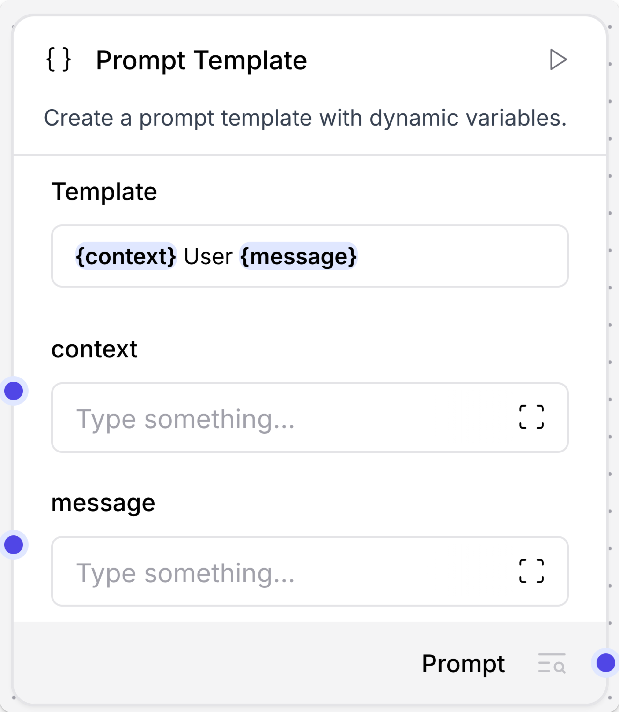
Prompt Template 변수 input
Prompt 안에 `{context}`, `{question}` 같은 변수를 쓰면 component에 같은 이름의 input field가 생깁니다. 질문과 검색 근거를 따로 연결할 때 자주 씁니다.
Source: Langflow Components overview documentation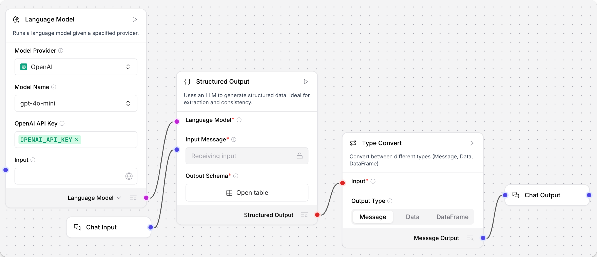
Structured Output
자유 답변 대신 정해진 schema의 `JSON/Table`을 만들 때 씁니다. 문서 추출, 보고서 필드 추출, 품질 점검 결과 구조화에 적합합니다.
Source: Langflow Structured Output documentation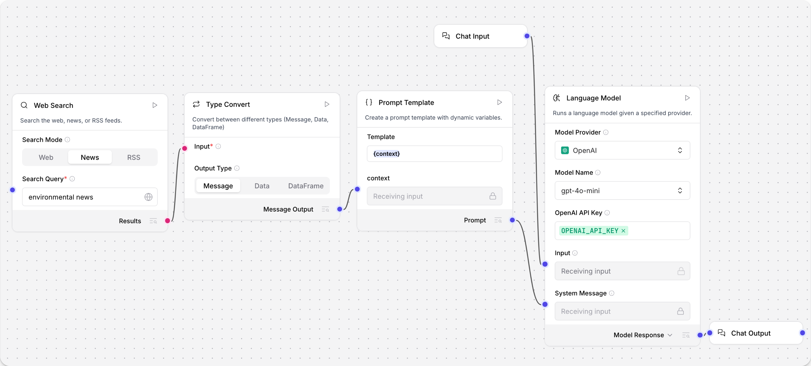
Type Convert
앞 노드의 output이 다음 노드 input 타입과 맞지 않을 때 중간에 둡니다. 예시처럼 `Table` 검색 결과를 `Message`로 바꿔 Prompt에 넣을 수 있습니다.
Source: Langflow Type Convert documentation
JSON Operations
Webhook/API/custom component가 만든 `JSON/Data`에서 key를 고르거나 필터링합니다. 여러 개를 체인으로 이어 간단한 payload 정리를 할 수 있습니다.
Source: Langflow JSON Operations documentation
Agent
Agent는 사용자 `Message`, `LanguageModel`, `Tools`를 함께 받아 필요한 tool을 골라 실행합니다. Tool output은 일반 Data가 아니라 Agent Tools input으로 연결합니다.
Source: Langflow Components overview documentation기본 노드별 사용 용도와 Input / Output
Langflow 화면의 실제 port 이름은 버전과 provider에 따라 조금 달라질 수 있습니다. 그래도 판단 기준은 같습니다. output 타입이 `Message`이면 message/text 계열 input으로, `JSON/Data`이면 Data/JSON 계열 input으로, `Table/DataFrame`이면 table 계열 input으로 연결합니다.
| 기본 노드 | 언제 쓰는가 | 주요 input | 주요 output | 바로 연결하기 좋은 다음 노드 | 초보자 주의점 |
|---|---|---|---|---|---|
| `Chat Input` | Playground/API에서 사용자의 질문, 지시문, 채팅 메시지를 flow로 넣을 때 사용합니다. | 사용자가 입력하는 text/message. 파일 첨부 옵션은 flow 설계에 따라 달라집니다. | `Message` | `Agent` Input, `Language Model` Input, `Prompt Template` 변수, custom normalizer의 `request_text` | 업무 payload 전체를 Chat Input text에 억지로 넣지 않습니다. 구조화 payload는 `Data/JSON`으로 별도 관리합니다. |
| `Chat Output` | 사용자에게 최종 결과를 보여주는 마지막 노드입니다. 중간 디버그 확인에도 자주 씁니다. | `Message`, `JSON`, `Table` 계열 input을 받을 수 있습니다. | Playground/API 응답 메시지 | 마지막 노드라 보통 downstream은 없습니다. 필요하면 여러 Chat Output으로 중간 결과를 확인합니다. | LLM 답변만 보지 말고 Parser/Type Convert 결과도 Chat Output에 임시 연결해 타입을 확인하면 실수가 줄어듭니다. |
| `Read File` | PDF, TXT, CSV, DOCX, PPTX 같은 파일을 업로드/선택해 텍스트, markdown, table, structured data로 읽을 때 사용합니다. 예전 자료의 `File` component는 현재 화면에서 `Read File`로 찾는 경우가 많습니다. | `Files` 또는 `Select files`, 저장 위치, 구분자, 오류 무시 여부 같은 기본 파일 읽기 옵션 | `Raw Content` 또는 `Markdown` 계열은 보통 `Message`, 표/JSON처럼 구조화된 결과는 환경에 따라 `Data`, `Table`, `DataFrame` 계열입니다. | `Chat Output`, `Prompt Template`, `Split Text`, `Parser`, `Structured Output`, `Type Convert` | 파일 확인은 먼저 `Read File` 노드 자체를 실행하고 Inspect Output으로 봅니다. 이 교육에서는 고급 파서 옵션에 의존하지 않고 기본 output이 비면 PDF를 텍스트 PDF로 다시 준비하거나 이미지 PDF 전용 custom flow로 분기합니다. |
| `Parser` | JSON/Table/DataFrame에서 필요한 값을 template로 뽑아 사람이 읽을 수 있는 text/message로 바꿀 때 사용합니다. | `Data or DataFrame`, template string. Mode가 있는 경우 Parser/Stringify를 선택합니다. | `Parsed Text` 또는 text `Message` | `Chat Output`, `Prompt Template` context, `Language Model` Input | Parser는 “Message를 JSON으로 바꾸는 노드”가 아닙니다. 구조화 input을 Message로 풀어주는 쪽에 가깝습니다. |
| `Prompt Template` | 사용자 질문, 문서 context, 출력 규칙을 하나의 prompt로 조립할 때 사용합니다. | `{question}`, `{context}` 같은 template 변수 input. 변수명은 template 안의 중괄호 이름과 맞아야 합니다. | `Prompt` 또는 `Message` 계열 | `Language Model` System Message/Input, `Agent` 지시문, Structured Output instruction | 검색 결과 JSON을 그대로 붙이면 길고 불안정합니다. 필요하면 Parser로 context text를 만든 뒤 Prompt에 넣습니다. |
| `Language Model` | LLM에게 답변 생성, 요약, 분류, 추출을 시킬 때 사용합니다. | `Input`, `System Message`, provider별 model/api key/options | `Model Response`는 `Message`입니다. 일부 노드는 `LanguageModel` 객체 output을 Agent/Structured Output에 연결합니다. | `Chat Output`, `Parser`, `Structured Output`, `Agent` | `Model Response(Message)`와 `LanguageModel 객체`는 다릅니다. Agent의 Language Model input에는 답변 text가 아니라 모델 객체 output을 연결합니다. |
| `Structured Output` | LLM 답변을 자유 텍스트가 아니라 정해진 JSON/Table schema로 받고 싶을 때 사용합니다. | `Input Message`, `Language Model`, schema/format 정의 | `JSON`, `Table`, `Data` 계열 structured result | `Parser`, `JSON Operations`, `Type Convert`, custom 검증 node, `Chat Output` | 추출 대상 field를 모호하게 쓰면 schema가 흔들립니다. 필수 field, 타입, 없을 때 값까지 prompt/schema에 적습니다. |
| `Type Convert` | `Message`, `JSON`, `Table` 사이 타입을 맞춰야 할 때 사용합니다. Run Flow 결과를 다시 JSON으로 복원할 때 특히 자주 씁니다. | 변환할 input과 목표 output type | 설정한 타입에 따라 `Message`, `JSON`, `Table` 등 | `Parser`, `JSON Operations`, `Table Operations`, `Chat Output`, custom component | 문자열이 JSON처럼 보여도 실제로는 `Message`일 수 있습니다. Type Convert로 바꾼 뒤 다음 노드 input 타입과 맞춥니다. |
| `JSON Operations` | JSON/Data payload에서 key 선택, 병합, 필터링, 간단한 구조 변경이 필요할 때 사용합니다. | `JSON/Data` input, operation 설정, path/key | `JSON/Data` | `Parser`, `Route Gate`, `Prompt Template`, custom normalizer | 복잡한 업무 규칙은 JSON Operations에 과하게 쌓기보다 custom component로 분리하는 편이 유지보수에 좋습니다. |
| `Split Text` | 긴 문서 텍스트를 RAG 색인용 chunk로 나눌 때 사용합니다. | 문서 `Message/Text/JSON/Table`, chunk size, overlap | chunk list 형태의 `Data/JSON/Table` 계열 | `Embedding Model`, `Vector Store`, Milvus/Chroma ingest component | 질문 답변 runtime flow에 매번 Split Text를 넣지 않습니다. 문서 적재 lifecycle에서 미리 chunk를 만들어 vector DB에 저장합니다. |
| `Embedding Model` | 질문이나 문서 chunk를 vector로 바꿀 때 사용합니다. | text/query/chunk, provider별 model 설정 | `Embeddings` 또는 embedding model handle | `Vector Store`, `Retriever`, Milvus/Chroma component | 문서 적재와 질문 검색에서 같은 embedding 모델과 차원을 써야 검색 품질과 연결이 안정적입니다. |
| `Vector Store / Retriever` | 문서 chunk를 저장하거나, 질문 vector로 관련 문서를 검색할 때 사용합니다. | `ingest_data`, `embedding`, `search_query`, collection/connection 설정 | 검색 결과 `Data/JSON/Table`, retriever handle, stored document metadata | `Parser`, `Prompt Template`, `Language Model`, `Chat Output` | 적재 flow와 질의 flow를 분리합니다. 같은 collection을 보되 실행 lifecycle은 따로 관리하는 것이 운영에 편합니다. |
| `Loop` | CSV row, 문서 페이지, 테스트 질문 목록처럼 여러 item에 같은 처리를 반복할 때 사용합니다. | `Inputs`는 list `JSON` 또는 `Table`, `Looping`은 처리 branch가 다시 돌아오는 input입니다. | `Item`은 item별 `JSON/Data`, `Done`은 aggregate 결과 `JSON/Data` 계열입니다. | `Type Convert`, `Structured Output`, API caller, custom processor, `Chat Output` | `Item → 처리 branch → Looping`으로 돌아와야 다음 item이 실행됩니다. 최종 결과는 `Done` output에서만 확인합니다. |
| `Run Flow` | 이미 만든 하위 flow를 상위 flow에서 호출하거나 Agent tool로 노출할 때 사용합니다. | 선택한 하위 flow의 input schema에 따라 동적으로 바뀝니다. text/message 중심 하위 flow가 많습니다. | 하위 flow 실행 결과 `Message`, `JSON/Data`, `Table` 또는 Tool output | `Type Convert`, `Chat Output`, `Agent Tools`, custom result normalizer | 하위 flow가 text input만 받으면 구조화 payload를 바로 넣지 말고 Payload Adapter로 JSON 문자열 `Message`로 감싸 전달합니다. |
| `Agent` | LLM이 질문을 보고 필요한 tool을 선택해 호출해야 할 때 사용합니다. | `Input Message`, `Language Model`, `Tools`, memory/history 옵션 | `Response Message`, tool call/observation 로그 | `Chat Output`, 후속 Parser, audit/log node | tool을 많이 붙이는 것보다 이름, description, input schema가 정확해야 합니다. 초보 실습은 Calculator/URL/Run Flow tool 정도로 작게 시작합니다. |
기본 노드 연결 패턴 6개
| 하고 싶은 일 | 정확한 연결 | 타입 흐름 | 성공 확인 방법 |
|---|---|---|---|
| PDF 내용을 먼저 확인 | `Read File` 노드 실행 → Inspect Output. 필요하면 `Read File.Markdown` → `Chat Output.input` | `Message` 또는 `DataFrame` 확인 → `Message` 표시 | 노드 실행 결과에 text/markdown이 보이면 파일 처리 단계는 성공입니다. Playground가 비어도 Inspect Output부터 확인합니다. |
| PDF 내용을 LLM으로 요약 | `Chat Input.Message` + `Read File`의 내용 확인된 `Raw Content/Markdown` → `Prompt Template` → `Language Model` → `Chat Output` | `Message` + `Message` → `Prompt/Message` → `Message` | 질문 지시와 문서 내용이 함께 반영된 답변이 나와야 합니다. |
| JSON/Table을 사람이 읽는 문장으로 출력 | `Structured Output` 또는 `Read File.Structured Output` → `Parser.Data or DataFrame` → `Chat Output.input` | `JSON/Table/DataFrame` → `Message` | Parser template의 key가 실제 JSON/Table 컬럼과 맞는지 확인합니다. |
| RAG 적재 flow 만들기 | `Read File` → `Split Text` → `Embedding Model` → `Vector Store.ingest_data` | `Message/Data` → `chunk Data` → `Embeddings` + `Data` | Vector store collection에 chunk 수와 metadata가 저장되는지 확인합니다. |
| RAG 질문 flow 만들기 | `Chat Input` → `Embedding Model` → `Vector Store Search` → `Parser/Prompt Template` → `Language Model` → `Chat Output` | `Message` → `Embeddings` → `Data/JSON` → `Message` → `Message` | 답변에 문서 출처, page, chunk id 같은 근거가 같이 나와야 합니다. |
| 하위 flow 호출 | `Payload Adapter.Run Flow Message` → `Run Flow.input` → `Type Convert` → `Chat Output` | `Data/JSON`을 감싼 `Message` → 하위 flow 결과 `Message` → `JSON/Data` 또는 `Message` | 하위 flow 단독 실행 결과와 상위 flow에서 호출한 결과가 같은지 비교합니다. |

Read File / Split Text / Vector Store
파일 적재 flow에서는 문서 읽기와 chunking을 먼저 끝내고 vector DB에 저장합니다. 질문 runtime에서 매번 파일을 다시 읽지 않는 것이 운영상 편합니다.
Source: Langflow Vector RAG tutorial
Chat Input / Retriever / Prompt / LLM
사용자 질문 flow에서는 Chat Input의 질문이 embedding과 prompt 양쪽에 쓰이고, vector search 결과가 Parser/Prompt를 거쳐 LLM context가 됩니다.
Source: Langflow Vector RAG tutorial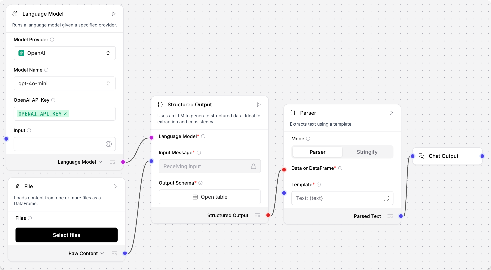
Structured Output / Parser
정해진 JSON/Table로 추출한 뒤 Parser로 사람이 읽는 Message를 만듭니다. 문서 추출, 계약서 필드 추출, 보고서 요약에 자주 쓰입니다.
Source: Langflow Parser documentation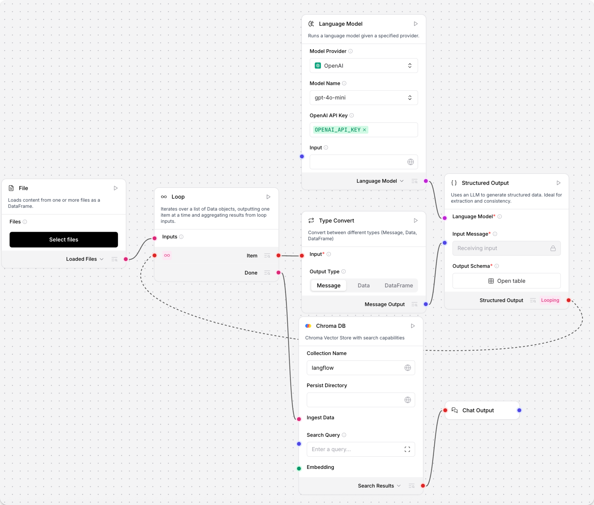
Loop / Item / Looping / Done
Loop는 직선 연결이 아니라 item 처리 branch가 다시 Looping으로 돌아오는 구조입니다. 모든 item이 끝나면 Done output에서 결과를 받습니다.
Source: Langflow Loop documentation공식 화면으로 보는 연결 예시
아래 이미지는 Langflow 공식 문서의 실제 캔버스/Playground 캡처입니다. 교육 중에는 선이 어디에서 어디로 들어가는지 먼저 보고, 그 다음 코드의 input/output 정의를 읽게 하면 이해가 빠릅니다.

Simple Agent 기본 연결
Chat Input의 Message가 Agent input으로 들어가고, URL/Calculator의 Toolset이 Agent Tools로 들어갑니다. Agent Response는 Chat Output으로 연결됩니다.
Source: Langflow Quickstart, Simple Agent template
Run Flow를 Agent tool로 연결
하위 flow를 Run Flow component로 감싼 뒤 Toolset output을 Agent Tools input에 연결합니다. 큰 업무는 subflow로 쪼개고 상위 agent가 호출하게 만들 때 유용합니다.
Source: Langflow Configure tools for agentsStructured Output → Parser → Chat Output
File/LLM 입력으로 structured data를 만들고, Parser가 JSON/Table을 Message로 바꾼 뒤 Chat Output으로 보냅니다. 구조화 추출 flow의 대표 연결입니다.
Source: Langflow Parser documentation
Playground에서 tool 입출력 확인
Agent가 어떤 tool을 호출했고 input/output이 무엇이었는지 Playground에서 확인합니다. flow 검증은 최종 답변만 보지 말고 중간 tool payload까지 봅니다.
Source: Langflow Quickstart, Playground with Agent tool
RAG Load Data Flow
File → Split Text → Embedding Model → Vector Store로 이어지는 ingestion 전용 flow입니다. 사내 문서 지식화는 이 흐름을 표준 template로 만드는 것이 좋습니다.
Source: Langflow Vector RAG tutorial
RAG Retriever Flow
Chat Input → Embedding → Vector Store → Parser → Prompt → Language Model → Chat Output으로 이어집니다. 검색 결과를 바로 LLM에 넣지 않고 Parser/Prompt로 정리하는 점을 봅니다.
Source: Langflow Vector RAG tutorial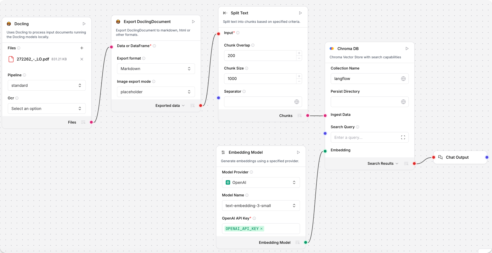
Docling 문서 처리 Flow
PDF/문서 처리, Markdown 변환, chunking, vector store 적재를 묶는 문서 지능 flow입니다. 사내 문서 AI에는 file parser와 chunker를 공통화합니다.
Source: Langflow Docling bundle documentationLoop component로 row 반복 처리
File/Table 입력을 Loop가 row 단위 JSON으로 나누고, 각 item을 Type Convert/Structured Output으로 처리한 뒤 Done port에서 결과를 모읍니다.
Source: Langflow Loop documentation, CSV parser example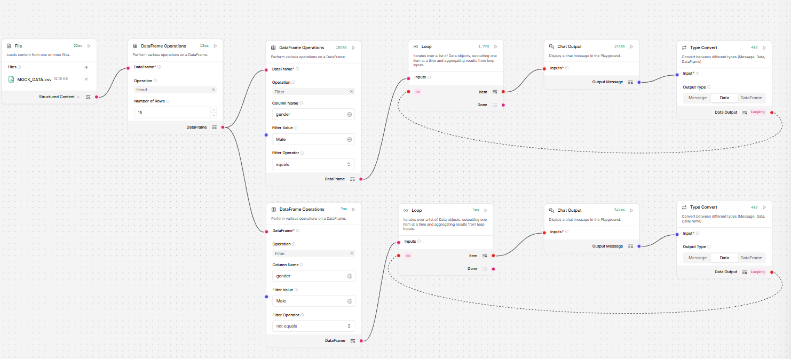
조건부 반복은 Loop 앞에서 분리
공식 문서 기준 If-Else는 Loop와 직접 호환되지 않습니다. 조건이 필요하면 Table Operations 등으로 데이터를 먼저 나누고 각각 Loop를 실행합니다.
Source: Langflow Loop documentation, conditional looping example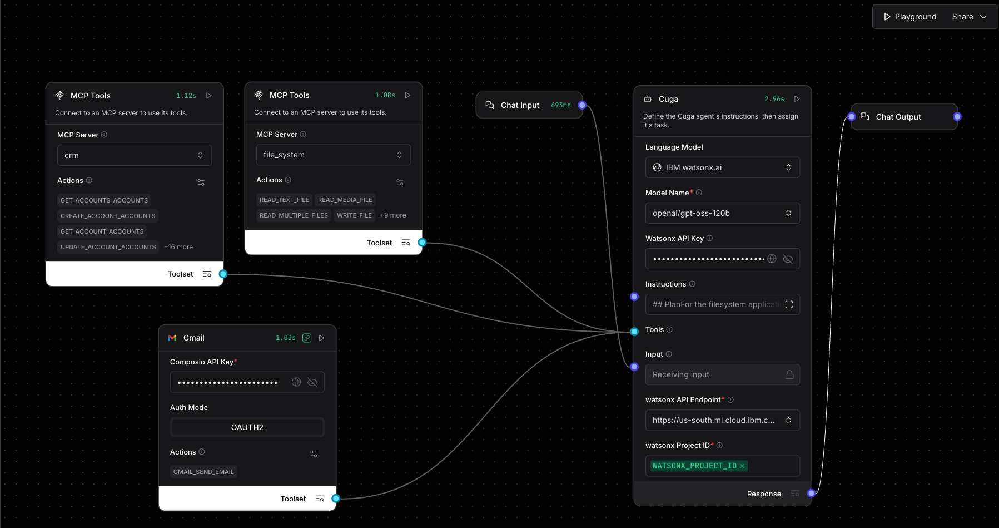
Enterprise Multi-step Agent
실무 agent는 단순 Q&A보다 여러 tool/API를 순서대로 호출하고 조건/오류를 처리하는 자동화에 가깝습니다. Policy gate, audit, approval을 함께 설계합니다.
Source: Langflow blog, Robust Enterprise AI Agent workflow with CUGA커뮤니티/GitHub에서 반복되는 실무 패턴
Langflow 공식 템플릿, 공식 블로그, GitHub template/custom component 저장소를 보면 기업 도입에서 반복되는 주제가 뚜렷합니다. 아래 내용은 그대로 복제하기보다 사내 표준 component/flow 후보를 정하는 근거로 쓰면 좋습니다.
RAG는 ingestion과 retrieval을 분리
공식 Vector Store RAG 튜토리얼은 파일을 쪼개고 embedding/vector store에 적재하는 Load Data Flow와, 질문을 받아 검색/답변하는 Retriever Flow를 분리합니다.
템플릿 카테고리는 업무 단위로 정리
커뮤니티 template 저장소는 AI pattern, customer support, data analytics, finance, HR, operations, sales/marketing, developer productivity처럼 업무 영역별로 flow를 나눕니다.
공통 component는 connector와 processor 중심
공식 bundle 문서와 커뮤니티 component 저장소는 외부 서비스 connector, 파일/문서 처리, table/json 변환, LLM helper, generator 계열 component를 반복적으로 다룹니다.
작은 flow부터 실행해 연결을 확인
공식 Playground 문서는 Chat Input에서 시작해 Chat Output까지 실제 메시지가 흐르는지 먼저 확인한 뒤, 파일/도구/vector store를 붙이는 방식을 권장합니다.
실무 agent는 multi-step automation
enterprise workflow 사례는 task decomposition, multi-tool sequencing, aggregation, conditional logic, retry/error handling, structured output을 핵심 요구로 봅니다.
flow도 template와 JSON 자산으로 관리
공식 template contribution 문서는 template 이름, 설명, 아이콘, README/Note, screenshot을 요구합니다. 사내에서도 flow 산출물을 버전 관리 대상으로 봐야 합니다.
RAG는 하나의 flow가 아니라 두 개의 lifecycle
문서 적재는 배치/관리자 flow, 질문 답변은 사용자 runtime flow로 분리해야 운영이 편합니다. 적재 flow는 문서 버전, chunk 정책, embedding 모델, vector store 갱신을 관리하고, runtime flow는 검색 품질, citation, 답변 포맷, latency를 관리합니다.
Batch / Admin Lifecycle
- 01File Intake업로드, 접근 권한, 문서 버전 정보를 먼저 고정합니다.
- 02ParsePDF, HTML, Markdown, PPT를 text/table/metadata로 분해합니다.
- 03Chunk업무 문서에 맞는 split policy와 overlap을 적용합니다.
- 04Embed / Storeembedding model 버전과 vector DB collection을 함께 기록합니다.
- 05Auditsource, count, error, 재색인 이력을 관리자 flow 산출물로 남깁니다.
User Runtime Lifecycle
- 01Question사용자 질문과 session/context를 runtime 입력으로 받습니다.
- 02Retrievequery embedding, metadata filter, hybrid search로 후보 근거를 찾습니다.
- 03Normalizechunk text, page, source, score를 evidence contract로 정리합니다.
- 04Answerprompt 규칙과 근거만 사용해 답변을 만들고 환각을 제한합니다.
- 05Cite사용한 문서와 confidence를 사용자가 확인할 수 있게 반환합니다.
교육에서는 RAG를 "한 장의 그림"으로 설명하지 말고, 관리자 적재 flow와 사용자 질의 flow를 각각 배포/모니터링/테스트하는 자산으로 설명하는 것이 좋습니다.
사내 공통 flow pack 추천
Payload Bridge
Run Flow가 text/message 중심으로 동작할 때 상위 flow의 Data/JSON payload를 Message로 감싸고, 결과를 다시 Data로 복원하는 흐름을 표준화합니다.
분석/재무
data analytics, finance report, KPI 설명처럼 표준 지표 정의와 근거 데이터 추적이 중요한 flow를 별도 pack으로 둡니다.
생산성/개발
developer productivity, sales/marketing automation, brand intelligence처럼 외부 도구와 문서/웹 검색을 섞는 flow를 template화합니다.
3. 사내 공통 Component 레시피
아래 컴포넌트들은 여러 팀이 반복해서 만들 가능성이 높습니다. 교육 때는 하나씩 구현하고, 운영에서는 검증된 버전을 공통 bundle로 관리합니다.
Company Payload Normalizer
text, dict, Data, JSON 문자열을 사내 표준 payload로 정규화하는 첫 번째 실습 node입니다.
File Dataset Loader
CSV/JSON/JSONL/TXT/Markdown/Excel 파일을 읽어 row_count, columns, preview_rows, warnings를 반환합니다.
PDF Page Image Extractor
이미지 기반 PDF를 OCR로 오래 돌리지 않고, 선택한 페이지를 PNG로 렌더링해 vision-capable model에 넘길 `Message`를 만듭니다.
Run Flow Payload Adapter
Data/JSON payload를 Run Flow의 text/message 경계에 연결할 수 있도록 Message로 직렬화합니다.
Multimodal Milvus Chunk Builder
PDF/PPT 텍스트와 vision summary를 합쳐 Milvus `ingest_data`에 넣기 좋은 chunk payload를 만듭니다. `parse_mode`에 따라 vision 설정 field가 동적으로 바뀝니다.
Document Loader Settings
`BoolInput`, `IntInput`, `FloatInput`, `DropdownInput`, `real_time_refresh`, `dynamic` field를 한 번에 보여주는 운영 설정 예제입니다.
Internal API Retriever
사내 API를 호출하고 bearer auth, timeout, raw response 옵션을 안전하게 처리합니다.
Route Gate
intent payload의 route를 `data_retrieval`, `document_rag`, `final_answer` branch로 분기합니다.
Safe DataFrame Profiler
DataFrame 전체를 LLM에 넘기지 않고 shape, columns, preview만 안정적으로 제공합니다.
Custom Component 입출력 상세 연결표
초보자는 먼저 “연결로 받는 input”과 “노드 안에서 직접 설정하는 input”을 구분하면 됩니다. 표의 코드 파일을 열어 같은 `name`이 `inputs`/`outputs`에 정의되어 있는지 확인하면서 따라가세요.
| Component | 연결로 받는 input | 직접 입력/설정 input | Output과 타입 | 다음 연결 기준 |
|---|---|---|---|---|
| Company Payload Normalizer | `request_text`는 `Chat Input`의 `Message` 또는 짧은 Text를 받습니다. `input_payload`는 upstream `Data/JSON`을 받는 선택 input입니다. | `include_debug`는 디버그 정보를 output에 포함할지 정하는 `BoolInput`입니다. `request_text`에는 `tool_mode=True`가 있어 Agent tool argument로도 채울 수 있습니다. | `payload`는 `Data`입니다. 내부에는 `request`, `payload`, `metadata`, 선택적 `debug`가 들어갑니다. | `Run Flow Payload Adapter.payload`, API 조회 조건, Prompt context처럼 `DataInput` 또는 `JSON/Data` 계열 input에 연결합니다. |
| File Dataset Loader | 외부 노드에서 선을 연결하는 input은 없습니다. `dataset_file`은 이 custom component 안에서 파일을 고르는 `FileInput` field입니다. | `parse_mode`는 `auto/csv/json/jsonl/text/markdown/excel`, `preview_limit`는 미리보기 행 수, `include_full_rows`는 작은 파일에서만 전체 rows 포함 여부를 정합니다. 업로드 허용 확장자는 코드의 `file_types`에 명시합니다. | `dataset`은 `Data`입니다. `row_count`, `columns`, `preview_rows`, `warnings`, 필요 시 `rows`를 담습니다. 단일 JSON object도 row 1개로 감싸 처리합니다. | LLM에는 `preview_rows` 중심으로 Prompt에 넣고, 반복 처리에는 `rows`가 있는지 확인한 뒤 Type Convert/custom normalizer로 list/Table 형태를 맞춥니다. |
| PDF Page Image Extractor | 외부 노드에서 선을 연결하는 input은 없습니다. `pdf_file`은 이 custom component 안에서 PDF를 고르는 `FileInput` field입니다. | `page_range`는 `1-3` 같은 페이지 범위, `max_pages`는 vision 비용 제한, `render_scale`은 이미지 선명도와 파일 크기를 조절합니다. | `Vision Message`는 `Message`이며 `files`에 렌더링된 PNG 경로가 들어갑니다. `Page Manifest`는 page, image_path, width/height를 담은 `Data`입니다. | `Vision Message`를 vision-capable `Language Model` 또는 `Agent`에 연결합니다. 모델이 이미지 입력을 지원하지 않으면 `Page Manifest`를 보고 PNG를 `Chat Input`의 Files에 직접 첨부해 테스트합니다. |
| Run Flow Payload Adapter | `request_text`는 `Chat Input`의 `Message/Text`, `payload`는 upstream `Data/JSON`을 받습니다. | `bridge_mode`는 `json_with_request/json_only/text_only`, `max_chars`는 하위 flow로 보낼 문자열 크기 제한입니다. | `Run Flow Message`는 `Message`, `Debug Payload`는 `Data`입니다. `group_outputs=True`라 두 output을 동시에 볼 수 있습니다. | `Run Flow Message`를 `Run Flow`의 text/message 입력에 연결합니다. 돌아온 `Message`는 `Type Convert` 또는 custom result normalizer로 JSON/Data화합니다. |
| Document Loader Settings | 연결 input 없이 설정 payload를 만드는 component입니다. 다른 노드에서 값을 받기보다 운영자가 화면에서 값을 정합니다. | `use_vision_summary`, `parse_mode`는 `real_time_refresh=True`로 바뀌는 즉시 field 표시가 갱신됩니다. `vision_model_profile`은 `dynamic=True`라 필요한 경우에만 보입니다. | `settings`는 `Data`입니다. parse mode, page limit, threshold, vision profile 같은 운영 설정을 한 payload로 묶습니다. | 문서 처리 custom component나 Prompt context에 설정값을 넘길 때 씁니다. 직접 연결할 input이 없다면 같은 값을 downstream component 설정에 복사해도 됩니다. |
| Multimodal Milvus Chunk Builder | `document_payload`는 Read File output, OCR 전처리 결과, vision model 요약 결과를 정규화한 `Data/JSON`을 받습니다. 페이지 구조가 없으면 `extracted_text`, `text`, `raw_content`, `markdown` 계열 필드를 단일 page로 감쌉니다. | `parse_mode`, `document_id`, `max_pages`, `chunk_chars`, `overlap_chars`, `include_visual_summaries`, `vision_model_profile`, `min_visual_confidence`로 적재 정책을 정합니다. | `Milvus Ingest Payload`와 `Ingestion Manifest`는 모두 `Data`입니다. 첫 output은 적재 본문, 두 번째는 검수/로그용입니다. | `Milvus Ingest Payload`를 Milvus component의 `ingest_data`에 연결합니다. Manifest는 `Chat Output` 또는 로그/검수 노드에 연결합니다. |
| Internal API Retriever | 이 예제는 주로 화면 설정값으로 API를 호출합니다. 필요하면 상위 payload에서 `api_url`이나 `params_json`을 Text로 매핑하는 wrapper를 앞에 둡니다. | `api_url`, `method`, `auth_type`, `api_key`, `params_json`, `timeout_seconds`, `include_raw_response`를 설정합니다. `auth_type=bearer`일 때만 `api_key`가 보이도록 dynamic field를 씁니다. | `retrieval_payload`는 `Data`입니다. `success`, `status_code`, `rows`, `row_count`, `columns`, `errors` 같은 표준 결과를 담습니다. `result/items/records` wrapper와 plain text 응답도 rows로 정규화합니다. | Agent tool, Data Q&A, Prompt context, Route Gate 뒤 branch에 연결합니다. 민감정보는 output/status/debug에 남기지 않는 것이 기준입니다. |
| Route Gate | `intent_payload`는 `route` 값을 포함한 `Data/JSON`을 받습니다. 예: `data_retrieval`, `document_rag`, `final_answer`. | 직접 설정 input은 없습니다. routing 규칙은 코드 안의 허용 route와 payload contract로 관리합니다. | `Data Retrieval`, `Document RAG`, `Final Answer`는 모두 `Data`입니다. `group_outputs=True`라 세 branch port가 동시에 노출됩니다. | 각 output을 해당 branch 첫 노드에 연결합니다. downstream은 `active=True`인 branch만 처리하고, `skipped=True` 또는 `success=False`인 branch는 무시합니다. |
| Safe DataFrame Profiler | `table`은 CSV/SQL/Table Operations 등에서 나온 `DataFrame` output을 받습니다. | `preview_limit`는 미리보기 행 수를 정하는 `IntInput`입니다. 전체 DataFrame을 LLM에 넘기지 않기 위한 안전장치입니다. | `Profile`은 `Data`, `Preview Table`은 `DataFrame`입니다. | `Profile`은 Prompt/LLM context에, `Preview Table`은 Table viewer나 후속 table 작업 노드에 연결합니다. |
공통 bundle로 올리기 전 기준
- component는 standalone이어야 합니다. 같은 폴더의 sibling module에 의존하지 않게 helper를 파일 안에 둡니다.
- secret은 입력으로 받을 수 있지만 output, debug, status에는 노출하지 않습니다.
- 외부 호출에는 timeout과 오류 payload를 둡니다.
- 대용량 결과는 `rows` 전체보다 `preview_rows`, `row_count`, `columns`, `data_ref`를 우선합니다.
- 각 component는 compile/import smoke test와 Langflow UI 연결 테스트를 통과해야 합니다.
4. 자주 사용하는 Flow 구현 패턴
특정 회사 사례를 그대로 복제하기보다, 실제 도입에서 반복되는 업무 유형을 blueprint로 잡아 사내 표준 flow로 변환합니다.
질문-답변 실습용 샘플 파일
아래 파일은 업로드만 확인하는 샘플이 아니라, Playground에서 질문을 넣고 기대 답변까지 비교할 수 있는 미니 데이터셋입니다. 전체 질문/정답은 샘플 질문과 기대 답변, 자동 평가용 구조는 rag_eval_cases.json에 있습니다.
| 파일 | 연결/flow | 질문 예시 | 기대 답변 핵심 |
|---|---|---|---|
| sample_rag_handbook.pdf | `Read File` → `Split Text` → `Embedding` → `Milvus` → `Chat Output` | RAG를 왜 문서 적재 flow와 사용자 질문 flow로 나눠야 해? | 적재는 upload/parse/chunk/embedding/Milvus upsert, runtime은 질문/search/prompt/answer 담당. |
| sample_visual_process_report.pdf | `PDF Page Image Extractor` → vision-capable `Language Model` → `Multimodal Milvus Chunk Builder` | 2페이지 공정 흐름도에서 병목 후보와 조치 우선순위를 요약해줘. | 검사 대기 42분, 재작업 루프, LOT-C-2409 냉각수 유량 점검/금형 조건 재승인. |
| sample_visual_process_report_page_002.png | `Chat Input.Files`에 PNG 첨부 → vision-capable `Language Model` → `Chat Output` | 첨부 이미지에서 병목 단계와 근거 수치를 요약해줘. | 검사 대기 42분이 가장 길고, 재작업 루프가 냉각 단계로 되돌아간다는 시각 근거. |
| company_faq_rag.json | `File Dataset Loader` → Prompt/LLM 또는 검색 flow | File Dataset Loader는 Read File 대신 언제 써? | 문서 추출은 Read File, CSV/JSON/Excel/Markdown 표준 payload 정리는 File Dataset Loader. |
| quality_inspection_metrics.csv | `File Dataset Loader` 또는 CSV/Table 노드 → `Safe DataFrame Profiler` | defect_rate가 가장 높은 lot과 원인, 조치가 뭐야? | LOT-C-2409, 0.0323, 금형 냉각 편차, 냉각수 유량 점검 후 금형 조건 재승인. |
| support_tickets.jsonl | `File Dataset Loader(parse_mode=jsonl)` → Prompt/LLM | 현재 open 상태의 high priority 티켓은 무엇이고 해결 방향은 뭐야? | TCK-2001, Milvus runtime 검색 결과 없음, collection_name과 embedding 차원 일치 필요. |
| sample_markdown_policy.md | `File Dataset Loader(parse_mode=markdown)` → Prompt/LLM | custom component가 실패했을 때 어떻게 반환해야 해? | `success=false`와 `errors` 배열을 포함한 Data payload 반환. |
| milvus_document_payload.json | `Multimodal Milvus Chunk Builder.document_payload` | Milvus record metadata에는 어떤 값들이 들어가야 해? | `document_id`, `source_file`, `page`, `chunk_index`, `modalities`, `source_locator`. |
| run_flow_payload_sample.json | `Run Flow Payload Adapter.payload` | 이 payload 기준으로 조치 우선순위를 요약해줘. | LOT-C-2409 최우선, LOT-C-2408/LOT-C-2406도 C라인 조치 대상. |
{kind=link}
샘플 파일 README에는 연결 순서와 답변 비교 기준을 정리해 두었습니다.
Mini Flow 1. PDF Text Extractor
먼저 PDF에서 텍스트가 제대로 나오는지 확인하는 가장 작은 단계입니다. 이 단계는 Playground 채팅보다 `Read File` 노드 자체 실행과 Inspect Output 확인이 우선입니다.
실습 예시: PDF 텍스트가 제대로 읽히는지 확인
초보자가 그대로 따라 하는 연결 순서
중요한 기준은 “파일이 먼저 읽혔는지”와 “그 output 타입을 어디로 보낼지”입니다. Chat Output이 비어도 `Read File`의 Inspect Output에 내용이 있으면 파일 처리 자체는 성공입니다.
- 01Read File만 먼저 배치캔버스에서 `Read File`을 추가하고 PDF를 선택합니다. 아직 Chat Output에 연결하지 않아도 됩니다.
- 02노드 실행 결과 확인`Read File` 카드 오른쪽의 실행 버튼을 누른 뒤 Inspect Output에서 내용이 나오는지 확인합니다.
- 03비어 있으면 파일 성격 확인PDF 뷰어에서 텍스트를 드래그해 복사할 수 있으면 텍스트 PDF입니다. 복사가 안 되면 이미지/스캔 PDF라서 이 흐름이 아니라 Mini Flow 2로 처리합니다.
- 04텍스트 PDF도 비면 샘플부터 재확인교육용으로는 먼저 `sample_rag_handbook.pdf`처럼 텍스트가 들어 있는 작은 PDF로 연결을 익힙니다. 회사 문서가 계속 비면 PDF 생성 방식이나 보안/암호화 여부를 확인합니다.
- 05화면에 보여줄 때만 Chat Output 연결`Markdown(Message)` 또는 내용이 있는 `Raw Content(Message)`를 `Chat Output.input`에 연결합니다.
- 06요약까지 하려면 Prompt/LLM 추가`Chat Input.Message`와 PDF 내용을 Prompt Template에 합친 뒤 `Language Model → Chat Output`으로 연결합니다.
아래 문서 내용을 사용자의 요청에 맞게 요약하세요.
[사용자 요청]
{question}
[PDF에서 추출한 내용]
{document}
[규칙]
- 문서에 없는 내용은 추측하지 마세요.
- 핵심 내용은 3~5개 bullet로 정리하세요.
- 페이지 번호나 섹션 정보가 보이면 함께 적으세요.| 목표 | From 노드 / output | Output 타입 | To 노드 / input | Input 타입 | 연결 |
|---|---|---|---|---|---|
| 가장 쉬운 PDF 텍스트 확인 | `Read File` / 노드 실행 결과 | `Message`, `DataFrame`, `Markdown` 중 실제 나온 값 | Inspect Output | 연결 없음 | 먼저 여기서 내용이 있는지 확인합니다. |
| Chat Output으로 눈에 보이게 확인 | `Read File` / `Markdown` 또는 내용 있는 `Raw Content` | `Message` | `Chat Output` / input | `Message`, `JSON`, `Table` 허용 | 가능. Playground가 비면 노드 실행 결과를 먼저 봅니다. |
| Parser로 구조화 결과를 문장화 | `Read File` / `Structured Output` 또는 `Table/JSON` | `Table`, `JSON`, `DataFrame` 계열 | `Parser` / `Data or DataFrame` | `Data`, `DataFrame`, `JSON/Table` 계열 | 가능. `Raw Content`가 아니라 구조화 output을 써야 합니다. |
| Parser 결과를 채팅에 표시 | `Parser` / `Parsed Text` | `Message` | `Chat Output` / input | `Message`, `JSON`, `Table` 허용 | 가능. Parser를 썼다면 마지막은 이 연결입니다. |
| 하지 말아야 할 연결 | `Read File` / `Raw Content` | `Message` | `Parser` / `Data or DataFrame` | `Data`, `DataFrame`, `JSON/Table` 계열 | 불가. 타입이 맞지 않으니 `Chat Output`으로 바로 보내세요. |
| 질문/요약까지 하기 | `Language Model` / `Model Response` | `Message` | `Chat Output` / input | `Message`, `JSON`, `Table` 허용 | 가능. `Chat Input` 질문과 PDF 내용을 Prompt로 합친 뒤 LLM output을 연결합니다. |
Mini Flow 2. Image PDF / Vision Summary
이미지 기반 PDF는 `Read File`에서 텍스트가 나오지 않는 경우가 많습니다. 이때는 필요한 페이지만 PNG로 분리한 뒤 vision-capable model에 넣어 페이지 요약을 만드는 방식이 더 단순하고 안정적입니다.
실습 예시: 이미지 기반 PDF를 요약해 보기
초보자가 그대로 따라 하는 연결 순서
`Prompt Template`은 “두 입력을 한 prompt로 합치는 노드”입니다. 그래서 `Chat Input → Prompt Template`, `Read File → Prompt Template` 두 선이 먼저 들어가고, 그 다음 `Prompt Template → Language Model → Chat Output`으로 나갑니다.
- 01PDF를 페이지 이미지로 분리`PDF Page Image Extractor`에 PDF를 넣고 `page_range=2` 또는 `1-3`으로 실행합니다. `Page Manifest`에 PNG 경로가 나오면 성공입니다.
- 02이미지 품질 확인생성된 PNG를 열어 표/차트/텍스트가 보이는지 확인합니다. 너무 작으면 `render_scale`을 2.0 정도로 올립니다.
- 03vision 모델로 페이지 설명 생성`Vision Message`를 vision-capable `Language Model`에 연결합니다. 모델이 이미지 입력을 받지 못하면 생성된 PNG를 `Chat Input`의 Files에 직접 첨부해 테스트합니다.
- 04요약 text를 RAG에 저장vision 답변을 page metadata와 함께 `Multimodal Milvus Chunk Builder.document_payload`에 넣고 Milvus에 저장합니다.
- 05페이지 단위로 검증모든 페이지를 한 번에 처리하기보다 1~2페이지로 먼저 연결을 확인하고, 결과가 맞으면 page 범위를 늘립니다.
`Read File`에서 이미지 PDF 내용이 비어 있으면 같은 설정을 반복하지 말고, 페이지 이미지 추출 방식으로 범위를 작게 나누어 확인합니다.
당신은 사내 문서 요약 도우미입니다.
[사용자 질문]
{question}
[문서 내용]
{document}
[작성 규칙]
- 문서 내용에 근거해서만 답변하세요.
- 표, 이미지, 도면 설명이 있으면 핵심 수치와 의미를 함께 요약하세요.
- 답변 끝에 근거가 된 페이지/섹션 정보가 있으면 함께 적으세요.
- 문서에서 확인되지 않는 내용은 "문서에서 확인되지 않습니다"라고 답하세요.
[출력 형식]
1. 요약:
2. 근거:
3. 확인 필요:| 연결할 선 | 시작 노드 / output | 도착 노드 / input | 왜 이렇게 연결하나 |
|---|---|---|---|
| 질문 선 | `Chat Input` / `Message` | `Prompt Template` / `question` | 사용자가 “표 위주로 요약”, “이미지 설명 포함”처럼 실행 때마다 바꿀 지시를 넣습니다. |
| 문서 선 | `Read File` / `Raw Content` 또는 `Markdown` | `Prompt Template` / `document` | 업로드한 PDF에서 추출된 텍스트/OCR 결과를 prompt의 문서 근거 영역에 넣습니다. |
| prompt 선 | `Prompt Template` / prompt 또는 message output | `Language Model` / input | 질문과 문서가 합쳐진 최종 prompt를 모델에게 전달합니다. |
| 답변 선 | `Language Model` / response output | `Chat Output` / input | 사용자가 볼 최종 요약 결과를 화면에 표시합니다. |
Mini Flow 3. Run Flow Payload Bridge
하위 flow가 text input, message output 중심이면 Chat Input과 upstream payload를 표준화한 뒤 JSON 문자열 Message로 감싸 전달합니다. 복귀 결과는 Type Convert 또는 custom normalizer로 다시 JSON/Data화하고 Chat Output으로 보여줍니다.
실습 예시: payload를 Run Flow가 받을 수 있는 Message로 바꾸기
초보자가 그대로 따라 하는 연결 순서
Run Flow에서 가장 많이 헷갈리는 지점은 “내가 가진 payload는 Data인데, 하위 flow는 Text/Message를 받는다”는 점입니다. 그래서 Adapter를 중간에 둬서 Data를 Message로 바꿉니다.
- 01하위 flow 입력 타입 확인Run Flow로 부를 하위 flow가 `Chat Input` 또는 text input을 받는지 먼저 확인합니다.
- 02요청과 payload 표준화`Chat Input.Message`를 `Company Payload Normalizer.request_text`에 연결하고, 필요하면 upstream Data/JSON을 normalizer의 payload input에 넣습니다.
- 03Message로 감싸기`Company Payload Normalizer.payload`를 `Run Flow Payload Adapter.payload`에 연결한 뒤, Adapter의 `Run Flow Message`를 `Run Flow` input에 연결합니다.
- 04돌아온 결과 복원`Run Flow` 결과가 JSON 문자열이면 `Type Convert`에서 JSON으로 바꾸고, 바로 사람이 읽을 답변이면 `Chat Output`에 연결합니다.
| 목표 | From 노드 / output | Output 타입 | To 노드 / input | Input 타입 | 연결 |
|---|---|---|---|---|---|
| 요청 text 표준화 | `Chat Input` / Message | `Message` | `Company Payload Normalizer` / `request_text` | Text/Message | 가능. 사용자의 요청을 payload에 보존합니다. |
| 구조화 payload 전달 | `Company Payload Normalizer` / `payload` | `Data` | `Run Flow Payload Adapter` / `payload` | `Data`, `JSON` | 가능. 이 단계에서 하위 flow 입력 계약을 만듭니다. |
| Run Flow 호출 | `Run Flow Payload Adapter` / `Run Flow Message` | `Message` | `Run Flow` / input | Text 또는 `Message` | 가능. 하위 flow가 받는 text input에 연결합니다. |
| 결과 JSON 복원 | `Run Flow` / Message output | `Message` | `Type Convert` / input | `Message` | 가능. Output Type을 `JSON`으로 설정합니다. |
| 결과 표시 | `Type Convert` / JSON 또는 `Run Flow` / Message | `JSON` 또는 `Message` | `Chat Output` / input | `Message`, `JSON`, `Table` 허용 | 가능. JSON을 사람이 읽기 좋게 만들려면 Parser를 추가합니다. |
Pattern A. 문서 RAG / 업무 지식 Q&A
규정, 매뉴얼, FAQ, 장애 대응 문서처럼 사내 문서 기반 답변이 필요한 팀에 가장 먼저 적용하기 좋은 flow입니다.
실습 예시: PDF 문서를 RAG로 질문하기
초보자가 그대로 따라 하는 연결 순서
문서 RAG는 먼저 적재 flow를 실행해 vector store에 문서를 넣고, 그 다음 질문 flow를 만듭니다. 질문 flow에서는 `Chat Input` 선이 두 갈래로 나뉩니다. 하나는 검색으로, 하나는 Prompt Template의 `{question}`으로 들어갑니다.
- 01적재 flow 먼저 만들기`Read File → Split Text → Embedding Model → Vector Store`를 연결하고, sample PDF 한 개가 실제로 적재되는지 확인합니다.
- 02질문을 검색으로 보내기`Chat Input.Message`를 `Embedding Model` 또는 vector store search query input에 연결합니다.
- 03질문과 검색 근거를 Prompt Template에 합치기`Chat Input.Message`는 `{question}`, 검색 결과는 `{context}` 변수로 넣습니다.
- 04최종 답변 연결`Prompt Template → Language Model → Chat Output` 순서로 연결하고, 답변에 문서명/페이지/chunk id가 보이는지 확인합니다.
당신은 사내 문서 기반 Q&A 도우미입니다.
[사용자 질문]
{question}
[검색된 문서 근거]
{context}
[답변 규칙]
- 검색된 문서 근거 안에서 확인되는 내용만 답변하세요.
- 근거가 부족하면 "제공된 문서 근거만으로는 확인할 수 없습니다"라고 답하세요.
- 답변 끝에 사용한 문서명, 페이지, chunk id가 있으면 함께 적으세요.
[출력 형식]
답변:
근거:
추가 확인 필요:| 목표 | From 노드 / output | Output 타입 | To 노드 / input | Input 타입 | 연결 |
|---|---|---|---|---|---|
| 질문 벡터 만들기 | `Chat Input` / Message | `Message` | `Embedding` / text 또는 input | Text/Message | 가능. 질문을 검색용 벡터로 바꾸는 첫 선입니다. |
| vector store 검색 | `Embedding` / Embeddings | `Embeddings` | `Vector Store Retriever` / embedding | `Embeddings` | 가능. embedding port끼리 연결합니다. |
| 검색 결과를 prompt에 넣기 | `Retriever` / search results | `Data`, `JSON`, `Table` 계열 | `Parser` 또는 `Prompt Template` / context | `Data/JSON/Table` 또는 Text | 가능. Parser로 Message화한 뒤 Prompt에 넣어도 됩니다. |
| 최종 답변 표시 | `Language Model` / Model Response | `Message` | `Chat Output` / input | `Message`, `JSON`, `Table` 허용 | 가능. 답변은 항상 Chat Output에서 확인합니다. |
- 핵심 통제: 답변에 사용한 문서 id, 제목, chunk id를 payload에 남깁니다.
- 추후 확장: 답변 포맷이 사내 표준으로 굳어지면 document metadata normalizer와 citation formatter를 custom component로 분리합니다.
- 검증 질문: 문서에 없는 내용을 물었을 때 “근거 없음”으로 답하는지 확인합니다.
Pattern B. PPT/PDF 멀티모달 Milvus RAG
PDF/PPT를 텍스트만 저장하지 않고, 페이지/슬라이드 이미지 설명까지 함께 chunk에 넣어 Milvus에 저장하는 flow입니다. 이미지 PDF는 긴 OCR job보다 `PDF Page Image Extractor`로 페이지 이미지를 만들고, vision 모델이 만든 설명 text를 저장하는 방식이 안정적입니다.
실습 예시: 이미지/차트 설명까지 Milvus에 넣고 질문하기
{kind=link}
초보자가 그대로 따라 하는 연결 순서
이 flow는 “문서를 Milvus에 넣는 화면”과 “질문해서 Milvus에서 찾는 화면”을 따로 만드는 것이 핵심입니다. 두 flow는 같은 `collection_name`과 같은 embedding 차원을 사용해야 합니다.
- 01적재 flow에서 페이지 이미지 만들기`PDF Page Image Extractor`로 필요한 page만 PNG로 만들고 `Page Manifest`를 확인합니다.
- 02이미지 설명 생성도면/표/슬라이드 의미가 필요하면 vision 가능한 `Language Model`로 설명을 만들고 같은 chunk payload에 넣습니다.
- 03Milvus ingest`Chunk Builder.Milvus Ingest Payload`를 Milvus의 `ingest_data`에 연결합니다.
- 04runtime 질문 flow`Chat Input → Embedding Model → Milvus Search → Prompt Template → Language Model → Chat Output`으로 연결합니다.
아래 문서 검색 결과를 근거로 답변하세요.
[질문]
{question}
[텍스트 근거]
{text_context}
[이미지/표/도면 설명 근거]
{visual_context}
[규칙]
- 텍스트 근거와 이미지 설명 근거를 구분해서 사용하세요.
- 페이지, 슬라이드, 파일명 metadata가 있으면 답변에 포함하세요.
- 근거가 부족하면 확인 불가라고 답하세요.
[출력]
답변:
근거 페이지/슬라이드:
이미지/표에서 확인한 내용:| 목표 | From 노드 / output | Output 타입 | To 노드 / input | Input 타입 | 연결 |
|---|---|---|---|---|---|
| 문서 payload 만들기 | `Read File` / Structured Output 또는 Markdown | `Data`, `JSON`, `Table` 계열 | `Multimodal Milvus Chunk Builder` / `document_payload` | `Data`, `JSON` | 가능. Message만 있으면 먼저 Type Convert/normalizer를 사용합니다. |
| Milvus에 적재 | `Chunk Builder` / `Milvus Ingest Payload` | `Data` | `Milvus` / `ingest_data` | `Data` | 가능. 같은 collection_name을 사용해야 합니다. |
| 질문 검색 | `Chat Input` / Message | `Message` | `Embedding Model` / query input | Text/Message | 가능. 질문을 query vector로 만듭니다. |
| 검색 근거로 답변 | `Milvus` / search results | `Data`, `JSON`, `Table` 계열 | `Prompt Template` / context | Text/Message 또는 JSON | 가능. 필요하면 Parser로 Message화한 뒤 Prompt에 넣습니다. |
1. Vector Store RAG template에서 시작
공식 Milvus 튜토리얼은 Langflow의 Vector Store RAG template를 만든 뒤 기본 vector store를 Milvus로 교체하는 방식으로 설명합니다.
2. Milvus component는 보통 두 개
하나는 문서 chunk를 `ingest_data`로 저장하는 적재용, 다른 하나는 `search_query`로 similarity search를 수행하는 조회용으로 둡니다.
3. 연결 URI와 embedding 차원 확인
로컬 학습은 Milvus Lite 파일 URI나 `http://localhost:19530`으로 시작하고, 운영은 사내 Milvus/Zilliz endpoint와 인증값을 사용합니다.
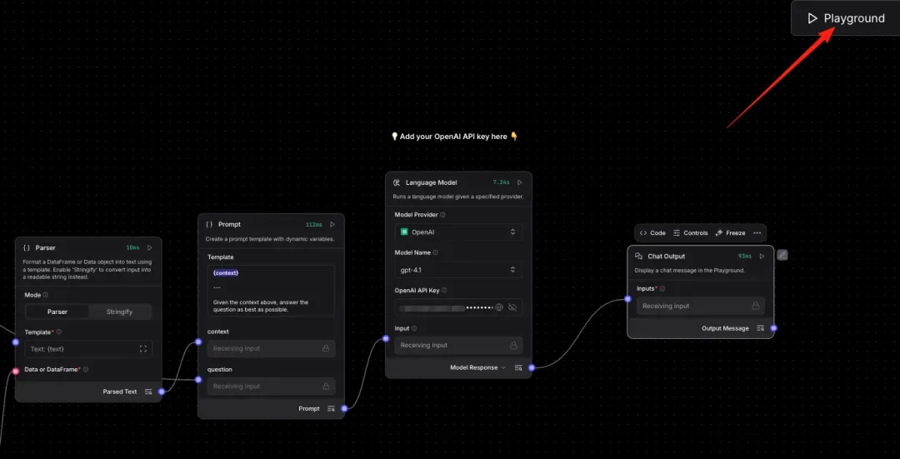
Vector Store RAG 전체 흐름
파일 적재 branch와 질문 응답 branch가 같은 캔버스에 보이더라도, 운영에서는 적재 lifecycle과 runtime lifecycle을 분리해서 관리합니다.
Source: Milvus blog, Langflow and Milvus RAG workflow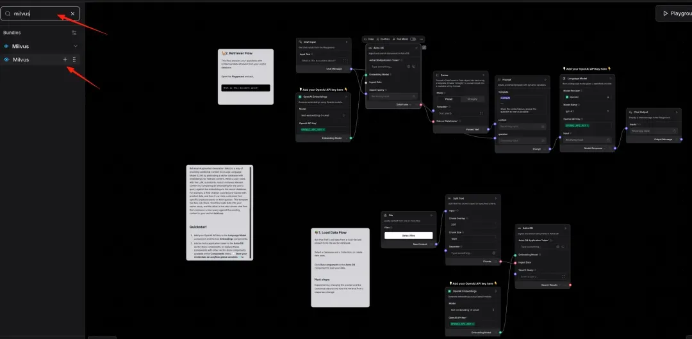
Milvus component 추가
Vector Store 목록에서 Milvus를 추가하고, 적재용/검색용 component를 각각 배치합니다. 두 component는 같은 collection을 바라보게 설정합니다.
Source: Milvus blog, add Milvus component
Milvus를 ingestion/retrieval에 연결
`embedding`, `ingest_data`, `search_query`, `search_results` port가 어떤 branch에 들어가는지 먼저 확인하면 연결 실수를 줄일 수 있습니다.
Source: Milvus blog, connect Milvus nodes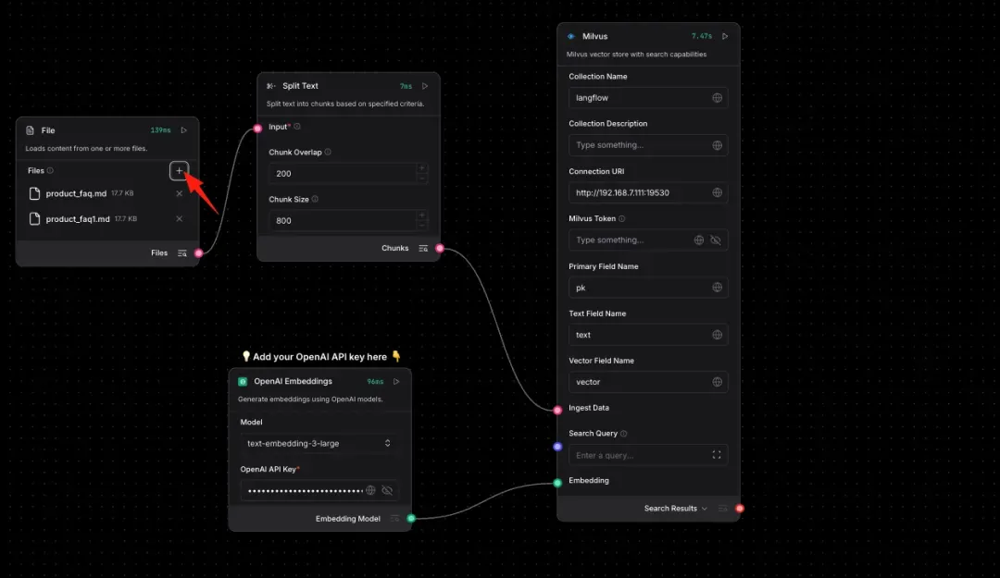
적재 실행 후 Playground 테스트
문서 업로드 후 Milvus 적재 component를 실행하고, Playground에서 해당 문서에 대한 질문이 검색 근거와 함께 답변되는지 확인합니다.
Source: Milvus blog, ingest and test- Milvus 예시 설정: `collection_name=company_multimodal_docs`, `uri=http://milvus:19530`, `embedding`은 사내 표준 embedding component에 연결, `vector_dimensions`는 embedding 모델 차원과 맞춥니다.
- 저장 payload: chunk의 `text`에는 `[PAGE_TEXT]`와 `[VISUAL_SUMMARY]`를 함께 넣고, metadata에는 `document_id`, `source_file`, `file_type`, `page`, `chunk_index`, `modalities`, `source_locator`를 둡니다.
- 이미지 원본 bytes를 Milvus에 직접 넣기보다 object storage 경로, 페이지 번호, 이미지 id를 metadata로 남깁니다. 검색 결과에는 LLM이 해석한 이미지 설명과 원문 locator를 같이 보여줍니다.
- 운영 분리: ingestion flow는 관리자/배치로 실행하고, runtime flow는 사용자의 질문 처리에만 집중합니다. `pre_delete_collection`은 개발 초기 재색인 때만 사용합니다.
- 검증 질문: “3페이지 그래프가 말하는 핵심 변화는?”, “슬라이드의 공정 흐름도에서 병목은 어디인가?”처럼 이미지 설명이 없으면 답하기 어려운 질문을 넣어 봅니다.
Pattern C. Loop component 기반 반복/배치 처리
Loop component는 list 형태의 `JSON` 또는 `Table` 입력을 item 단위로 나눠 같은 처리 branch를 반복 실행하고, 모든 item이 끝나면 Done port로 aggregate 결과를 내보냅니다. CSV row 처리, 문서 page/slide 처리, 회귀 질문 세트 실행, batch API 호출처럼 “같은 작업을 여러 건 반복”할 때 먼저 고려합니다.
실습 예시: 티켓 목록을 한 건씩 반복 처리
초보자가 그대로 따라 하는 연결 순서
Loop는 일반 직선 flow가 아니라 `Item → 처리 branch → Looping`으로 되돌아오는 구조입니다. 마지막 결과는 `Done`에서 나옵니다.
- 01반복 대상 준비CSV/JSON/Table을 먼저 `File Dataset Loader`나 기본 파일 노드로 읽고, rows/list 형태인지 확인합니다.
- 02Loop Inputs에 연결반복 대상 output을 `Loop.Inputs`에 연결합니다. Message 한 덩어리는 그대로 넣지 않습니다.
- 03Item 처리 branch 만들기`Loop.Item`을 processor custom component나 Type Convert/Structured Output에 연결합니다.
- 04Looping으로 되돌리기processor의 처리 결과를 `Loop.Looping`에 연결합니다. 마지막 전체 결과는 `Loop.Done`에서 `Chat Output`으로 보냅니다.
| 목표 | From 노드 / output | Output 타입 | To 노드 / input | Input 타입 | 연결 |
|---|---|---|---|---|---|
| 반복 대상 넣기 | `Read File` 또는 custom loader / Table·JSON | `Table`, `JSON`, `Data` | `Loop` / Inputs | list `JSON` 또는 `Table` | 가능. 단일 Message text는 Loop 입력으로 적합하지 않습니다. |
| 한 건씩 처리 | `Loop` / Item | `JSON` item | Processor custom node / payload input | `Data`, `JSON` | 가능. 한 row 또는 한 page만 들어온다고 생각하면 됩니다. |
| 다음 item으로 복귀 | Processor / result | `Data`, `JSON`, `Message` 중 설계값 | `Loop` / Looping | Looping input | 가능. 처리 branch의 마지막 선은 Looping으로 돌아갑니다. |
| 전체 결과 출력 | `Loop` / Done | aggregate `JSON` | `Parser` 또는 `Chat Output` / input | `JSON`, `Message` | 가능. Done만 최종 집계 결과입니다. |
문서/파일 배치
CSV row, PDF page, PPT slide를 item으로 돌리며 structured output, OCR/vision summary, schema validation을 반복합니다.
API batch 호출
여러 id나 query를 한 번에 받아 API retriever를 반복 실행합니다. timeout, retry, partial failure payload를 반드시 남깁니다.
평가/검증 세트
대표 질문 목록을 Loop로 돌려 RAG 답변, citation, 근거 표시 결과를 모으면 교육용 smoke test flow로도 쓸 수 있습니다.
CSV row를 item으로 반복
공식 예시는 CSV/File 입력을 Loop에 넣고, Item output을 Type Convert와 Structured Output으로 처리한 뒤 Looping port로 되돌립니다.
Source: Langflow Loop documentation조건 분기는 Loop 앞에서 처리
If-Else component는 Loop와 직접 호환되지 않으므로, Table Operations 등으로 조건별 데이터를 먼저 나누고 각각 Loop를 실행합니다.
Source: Langflow Loop documentation# 실제 Langflow Loop component 코드가 아니라 학습용 의사 코드입니다.
results = []
for item in input_rows_or_json_list:
# Item port로 한 건씩 흘러갑니다.
processed = processor(item)
# 마지막 처리 component가 Looping port로 되돌려 다음 item을 요청합니다.
results.append(processed)
# 더 이상 item이 없으면 Done port에서 모은 결과를 downstream으로 보냅니다.
done_payload = {"success": True, "items": results, "row_count": len(results)}- Loop의 Inputs port에는 list 형태의 JSON 또는 Table을 넣습니다. 각 Item output은 개별 JSON으로 downstream에 전달됩니다.
- Item port에는 하나의 component chain만 직접 연결합니다. 그 chain 안에서는 여러 component를 이어도 되지만 마지막은 Looping port로 돌아가야 합니다.
- Done port는 반복이 모두 끝난 뒤 aggregate된 JSON 결과를 내보냅니다. 이후 Vector Store ingest, Chat Output, 검증 report node로 연결합니다.
- 실무 주의점: item별 오류가 있어도 전체 flow를 중단할지, `partial_success`로 모을지 미리 정합니다. batch API나 문서 처리에서는 부분 실패 정책이 특히 중요합니다.
Pattern D. 사내 Tool-Using Agent
Agent가 SQL, API, 검색, 계산기, Run Flow 같은 도구를 골라 실행하는 형태입니다. 고객지원, 운영 관제, 사내 헬프데스크에 자주 맞습니다.
실습 예시: 티켓 조회 tool을 Agent에 붙이기
초보자가 그대로 따라 하는 연결 순서
Agent flow는 Chat Input/Output 사이에 Agent를 두고, Agent가 사용할 tool을 Tools port에 연결하는 방식으로 이해하면 됩니다.
- 01Agent를 먼저 배치Agent 노드를 놓고 `Input`, `Language Model`, `Tools` port가 있는지 확인합니다.
- 02사용자 요청 연결`Chat Input.Message`를 `Agent.Input`에 연결합니다.
- 03모델 객체 연결`Language Model` 노드의 `LanguageModel` output을 `Agent.Language Model`에 연결합니다. 답변 text output과 헷갈리지 않습니다.
- 04Tool과 출력 연결tool output은 `Agent.Tools`에, `Agent.Response`는 `Chat Output.input`에 연결합니다.
| 목표 | From 노드 / output | Output 타입 | To 노드 / input | Input 타입 | 연결 |
|---|---|---|---|---|---|
| 사용자 요청 입력 | `Chat Input` / Message | `Message` | `Agent` / Input | `Message` | 가능. Agent가 사용자의 자연어 요청을 받습니다. |
| LLM 연결 | `Language Model` / Language Model | `LanguageModel` | `Agent` / Language Model | `LanguageModel` | 가능. Model Response가 아니라 모델 객체 output을 연결합니다. |
| tool 연결 | `Internal API Retriever` 또는 Toolset / Tool | `Tool` | `Agent` / Tools | `Tool` list | 가능. custom component를 tool로 쓸 때는 tool mode/설명을 확인합니다. |
| 답변 표시 | `Agent` / Response | `Message` | `Chat Output` / input | `Message`, `JSON`, `Table` 허용 | 가능. Playground에서 tool 호출 로그도 함께 확인합니다. |
- 핵심 통제: Tool action description을 구체적으로 쓰고, 위험한 action은 비활성화합니다.
- 검증 질문: 도구가 필요 없는 질문에서 불필요한 API 호출을 하지 않는지 확인합니다.
Pattern E. 데이터 조회/분석 Agent
제조, 영업, 재무, 품질처럼 “자연어로 데이터 조건을 말하고 표/지표/분석 결과를 받는” 업무에 적합합니다.
실습 예시: CSV 품질 데이터를 분석 질문으로 답하기
초보자가 그대로 따라 하는 연결 순서
데이터 분석 flow는 `질문 정규화 → 데이터 조회 → 표 요약 → 답변` 순서입니다. DataFrame과 Data를 구분하는 것이 중요합니다.
- 01질문을 표준 payload로 만들기`Chat Input.Message`를 `Company Payload Normalizer.request_text`에 연결합니다.
- 02조회 노드에 조건 전달Normalizer의 `payload(Data)`를 API/SQL/File 조회 노드가 요구하는 input schema에 맞춰 연결합니다.
- 03표 결과를 profile로 축약조회 결과가 DataFrame이면 `Safe DataFrame Profiler.table`에 연결하고, `Profile` output을 Prompt로 보냅니다.
- 04답변과 preview 분리LLM 답변은 `Chat Output`에, `Preview Table`은 table viewer나 별도 Chat Output에 연결해 검증합니다.
아래 데이터 profile과 preview를 근거로 질문에 답하세요.
[질문]
{question}
[데이터 Profile]
{profile}
[미리보기 Rows]
{preview_rows}
[규칙]
- profile과 preview에 없는 값은 추측하지 마세요.
- 계산 기준, 필터, 기간을 답변에 함께 적으세요.
- 이상치나 결측이 보이면 "확인 필요"에 적으세요.
[출력 형식]
결론:
근거:
표/지표 요약:
확인 필요:| 목표 | From 노드 / output | Output 타입 | To 노드 / input | Input 타입 | 연결 |
|---|---|---|---|---|---|
| 질문 payload 만들기 | `Chat Input` / Message | `Message` | `Company Payload Normalizer` / `request_text` | Text/Message | 가능. 자연어 질문을 표준 Data payload로 바꿉니다. |
| API/SQL 조회 | `Payload Normalizer` / `payload` | `Data` | `Internal API Retriever` 또는 조회 node / input | `Data` 또는 설정 field | 조건부. 조회 node가 요구하는 schema에 맞춰 mapping합니다. |
| 표 요약 | 조회 node / table result | `DataFrame` | `Safe DataFrame Profiler` / `table` | `DataFrame` | 가능. DataFrame일 때만 profiler table input에 연결합니다. |
| LLM 답변 만들기 | `Safe DataFrame Profiler` / `Profile` | `Data` | `Prompt Template` / context | Text/Message 또는 Data | 가능. 필요하면 Parser/Type Convert로 Message화합니다. |
| 최종 출력 | `Language Model` / Model Response | `Message` | `Chat Output` / input | `Message`, `JSON`, `Table` 허용 | 가능. 답변과 표 preview를 함께 보여주도록 설계합니다. |
- 핵심 통제: dataset catalog, metric definition, filter metadata를 코드가 아니라 관리 데이터로 둡니다.
- 검증 질문: 같은 데이터셋의 기간 비교와 서로 다른 데이터셋 조인이 구분되는지 확인합니다.
Pattern F. 문서 업로드 / 구조화 추출
계약서, 보고서, 검사 성적서, 회의록을 업로드하고 핵심 필드를 JSON 또는 테이블로 추출하는 flow입니다. 텍스트 PDF는 `Read File`의 Raw Content/Markdown/Structured Output으로 확인하고, 이미지 PDF는 `PDF Page Image Extractor`로 page image를 만든 뒤 vision-capable model이 설명 text를 만들게 합니다.
실습 예시: 이미지 PDF에서 구조화 필드 추출
초보자가 그대로 따라 하는 연결 순서
문서 추출은 LLM이 자유 답변을 만드는 flow가 아니라, Structured Output이 JSON/Table을 만들고 Parser가 사람이 읽는 Message로 바꾸는 flow입니다.
- 01문서 종류부터 구분텍스트 PDF는 `Read File`로 확인하고, 이미지 PDF는 `PDF Page Image Extractor`로 page PNG를 먼저 만듭니다.
- 02추출 지시와 문서 연결`Chat Input.Message`는 추출 기준으로, `Read File`의 내용 확인된 `Raw Content/Markdown`은 문서 본문으로 `Structured Output`에 넣습니다.
- 03Language Model 객체 연결`Language Model.LanguageModel` output을 `Structured Output.Language Model` input에 연결합니다.
- 04결과 검토`Structured Output`의 JSON/Table output을 `Parser`에 넣고, `Parser.Parsed Text`를 `Chat Output`에 연결합니다.
아래 문서에서 지정된 필드를 추출하세요.
[추출 지시]
{instruction}
[문서 내용]
{document}
[추출 필드]
- document_title: 문서 제목
- document_date: 작성일 또는 발행일
- owner_department: 담당 부서
- key_items: 핵심 항목 목록
- risks: 위험/이슈 목록
- evidence: 각 필드의 근거 문장 또는 페이지
[규칙]
- 문서에서 찾을 수 없는 값은 null로 둡니다.
- 각 값에는 가능한 경우 page 또는 section 근거를 함께 남깁니다.
- 임의로 값을 만들어 채우지 마세요.| 목표 | From 노드 / output | Output 타입 | To 노드 / input | Input 타입 | 연결 |
|---|---|---|---|---|---|
| 추출 기준 입력 | `Chat Input` / Message | `Message` | `Prompt Template` 또는 `Structured Output` / instructions | `Message` 또는 Text | 가능. 어떤 필드를 뽑을지 지시합니다. |
| 문서 내용 입력 | `Read File` / Raw Content 또는 Markdown | `Message` | `Structured Output` / Input Message | `Message` | 가능. PDF 내용이 Message로 들어갑니다. |
| LLM 연결 | `Language Model` / Language Model | `LanguageModel` | `Structured Output` / Language Model | `LanguageModel` | 가능. Model Response가 아니라 모델 객체 output을 연결합니다. |
| 추출 결과 문장화 | `Structured Output` / structured result | `JSON` 또는 `Table` | `Parser` / Data or DataFrame | `Data`, `DataFrame`, `JSON/Table` 계열 | 가능. 템플릿 변수명은 JSON key와 같아야 합니다. |
| 검토용 출력 | `Parser` / Parsed Text | `Message` | `Chat Output` / input | `Message`, `JSON`, `Table` 허용 | 가능. 사용자가 검토할 최종 결과입니다. |
- 핵심 통제: 원문 위치, 페이지, confidence, 누락 필드를 함께 반환합니다.
- 이미지 해석 범위: OCR은 글자 추출, vision model은 차트/도면/스크린샷의 의미 설명에 사용합니다. 문서 전체를 한 번에 넣지 말고 page limit과 review 단계를 둡니다.
- 검증 질문: 일부 필드가 없는 문서에서 임의 값을 만들지 않는지 확인합니다.
Pattern G. Run Flow 기반 Subflow Orchestration
큰 flow를 한 canvas에 모두 넣지 않고, 문서 검색 flow, 데이터 조회 flow, 요약 flow를 독립 배포한 뒤 상위 agent가 호출하게 합니다. 하위 flow가 text input, message output 중심이면 payload adapter로 JSON/Data를 Message 문자열 계약으로 감싸 전달합니다.
실습 예시: 문서 RAG와 품질 데이터 분석 subflow를 함께 호출
초보자가 그대로 따라 하는 연결 순서
Subflow 조합은 Mini Flow 3과 같은 원리입니다. 상위 flow의 Data/JSON을 Message로 감싸 Run Flow에 넣고, 돌아온 Message를 다시 JSON/Data로 복원합니다.
- 01하위 flow를 먼저 단독 실행문서 검색, 데이터 조회, 요약 flow를 각각 Playground에서 성공시킨 뒤 Run Flow로 부릅니다.
- 02상위 payload와 route 만들기`Company Payload Normalizer`와 `Route Gate`로 어떤 subflow를 부를지 결정합니다.
- 03payload를 Message로 변환`Route Gate`의 활성 branch output을 `Run Flow Payload Adapter.payload`에 넣고, Adapter output을 `Run Flow.input`에 연결합니다.
- 04결과 복원 후 출력`Run Flow` 결과 Message를 `Type Convert` 또는 result normalizer로 복원한 뒤 `Chat Output`으로 보여줍니다.
| 목표 | From 노드 / output | Output 타입 | To 노드 / input | Input 타입 | 연결 |
|---|---|---|---|---|---|
| 사용자 요청 정규화 | `Chat Input` / Message | `Message` | `Company Payload Normalizer` / `request_text` | Text/Message | 가능. 상위 flow의 표준 payload를 만듭니다. |
| Run Flow 입력 만들기 | `Payload Normalizer` / `payload` | `Data` | `Run Flow Payload Adapter` / `payload` | `Data`, `JSON` | 가능. 구조화 payload를 Message로 직렬화합니다. |
| 하위 flow 호출 | `Payload Adapter` / `Run Flow Message` | `Message` | `Run Flow` / input | Text 또는 `Message` | 가능. 하위 flow의 text input에 들어갑니다. |
| 결과 복원 | `Run Flow` / Message output | `Message` | `Type Convert` / input | `Message` | 가능. JSON 문자열이면 Output Type을 `JSON`으로 둡니다. |
| 최종 출력 | `Type Convert` / JSON 또는 normalizer / Data | `JSON`, `Data`, `Message` | `Chat Output` 또는 final Prompt / input | `Message`, `JSON`, `Table` 허용 | 가능. 사용자에게 보여줄 형식으로 한 번 정리합니다. |
- 핵심 통제: subflow별 input/output schema를 문서화하고 API access/tweaks로 배포 값을 분리합니다.
- 간단 실습: Company Payload Normalizer → Run Flow Payload Adapter → Run Flow → Type Convert/Result Normalizer 순서로 연결합니다.
- 검증 질문: 한 subflow가 실패해도 나머지 결과로 제한된 답변을 만드는지 확인합니다.
5. 검증 체크리스트
체크 상태는 이 브라우저의 localStorage에 저장됩니다. 교육 중 실습 완료 확인용으로 사용할 수 있습니다.
Component 검증
Flow 검증
python -m compileall -q examples
# Langflow components path 예시
$env:LANGFLOW_COMPONENTS_PATH="C:\path\to\custom_components"
langflow run --port 7860
# UI에서 확인할 항목
# 1. component가 원하는 category에 보이는가?
# 2. input field와 advanced field가 의도대로 보이는가?
# 3. output port 타입과 downstream 연결이 맞는가?
# 4. 실패 입력에서 errors payload와 self.status가 확인되는가?공식 참고 문서
아래 링크는 이 교육 자료를 만들 때 기준으로 삼은 Langflow 공식 문서입니다. 버전 업그레이드 시 이 항목부터 재확인하세요.
- Create custom Python components - custom component 구조, class metadata, inputs/outputs, 로드 방식
- Components overview - 기본 노드 추가 방식, component grouping, output type 선택 개념
- Langflow data types - port/data type 연결 원칙
- Chat Input and Output - Chat Input `Message` 생성, Chat Output의 `Message/JSON/Table` 입력
- Prompt Template - `{variable}` 기반 prompt 변수 input 생성과 연결 방식
- Language Model - `Model Response`와 `LanguageModel` output 차이
- Structured Output - LLM으로 `JSON/Table` 구조화 결과를 만드는 방식
- Type Convert - `JSON`, `Table`, `Message` 타입 변환 기준
- JSON Operations - JSON key 선택, 필터링, 변환과 Type Convert 사용 기준
- Split Text - RAG 적재용 chunk 생성 기준
- Embedding Model - embedding 모델과 chunk size, vector store 호환 기준
- Configure tools for agents - Tool Mode, custom component tool, Run Flow tool
- Run Flow - 하위 flow 실행, 동적 input/output field, Agent tool 연결 기준
- Build flows - flow의 기본 개념과 template 기반 시작점
- Read File - 파일 업로드와 기본 파일 읽기 노드 사용법
- Create a vector RAG chatbot - Load Data Flow / Retriever Flow 분리와 RAG 화면 이미지 출처
- Docling bundle - 문서 파싱, chunking, vector store 적재 화면 이미지 출처
- Milvus bundle - Milvus vector store, `ingest_data`, `embedding`, `collection_name`, `uri`, search 설정
- Loop component - list JSON/Table 반복 처리, Item/Looping/Done port, 조건부 반복 설계
- Milvus + Langflow RAG tutorial - Vector Store RAG template에서 Milvus를 연결하고 적재/검색을 테스트하는 화면 이미지 출처
- Building a RAG System Using Langflow with Milvus - Milvus 공식 Langflow RAG 튜토리얼과 설정 절차
- Langflow Quickstart - Simple Agent template와 Playground 이미지 출처
- Parser - Structured Output과 Parser 연결 이미지 출처
- Langflow Use Cases - ready-made agents, RAG templates, business automation template 방향
- Empreiteiro/langflow-templates - 커뮤니티 template 카테고리 조사 참고
- Empreiteiro/langflow-factory - 커뮤니티 custom component library 조사 참고
- Enterprise AI Agent workflow with CUGA - multi-step enterprise flow와 이미지 출처
- Contributing templates - template 이름, 설명, screenshot, Note/README 요구사항 참고
- Trigger flows with the Langflow API - API access, tweaks, embed chat widget
- Test flows in the Playground - Playground 기반 flow 테스트
- Environment variables - `LANGFLOW_COMPONENTS_PATH`, custom component 로드 관련 설정